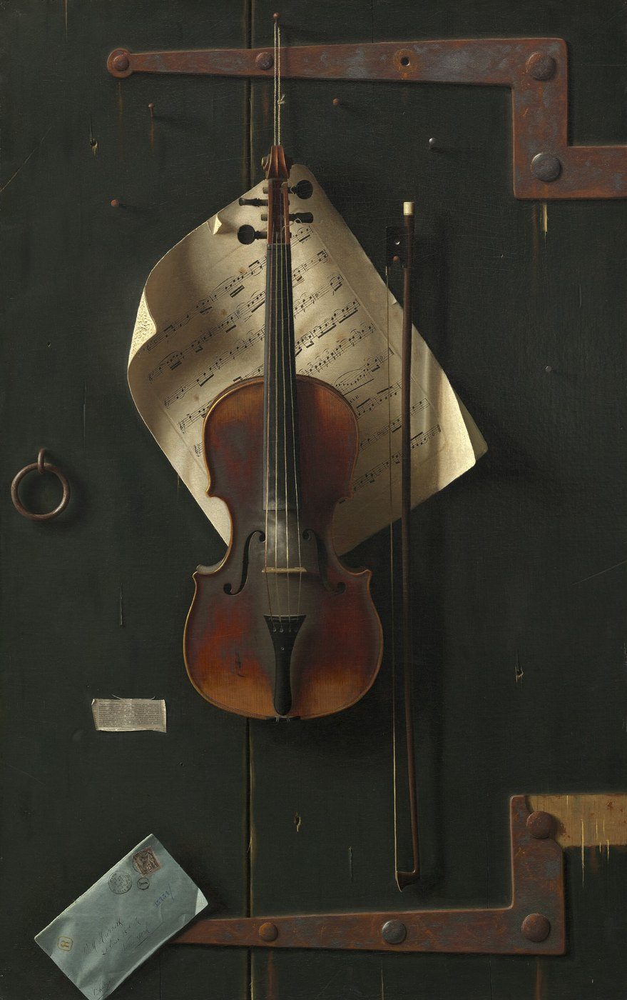
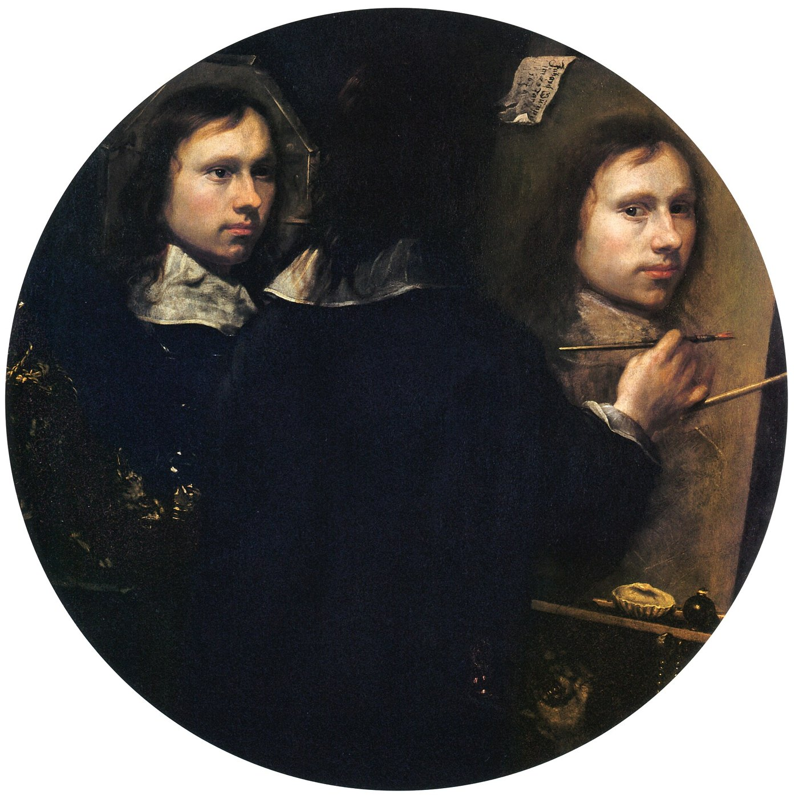
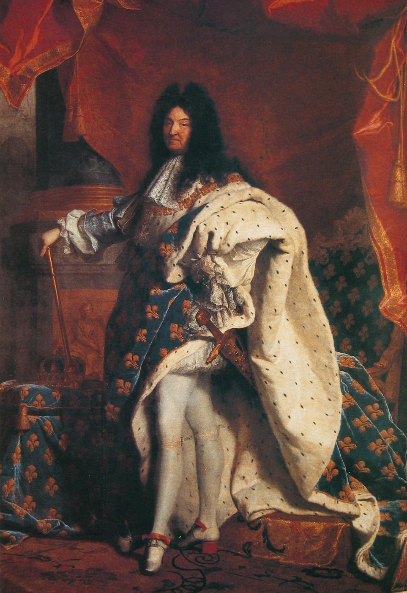
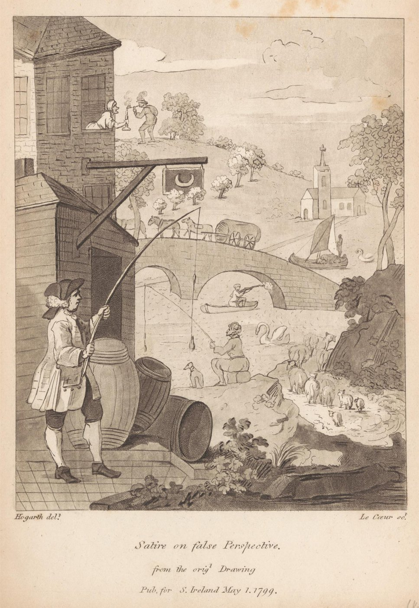
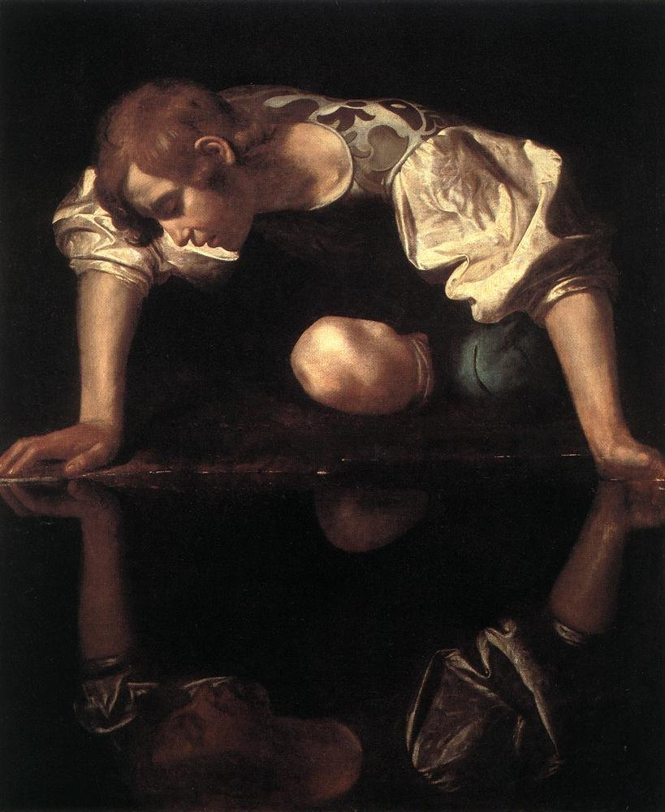
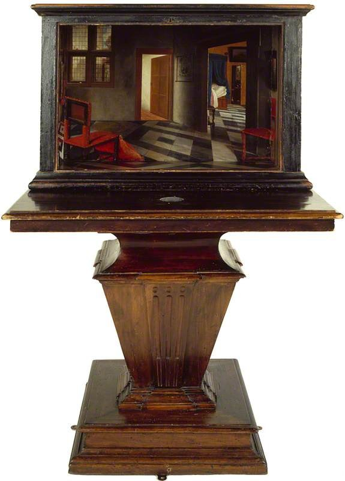
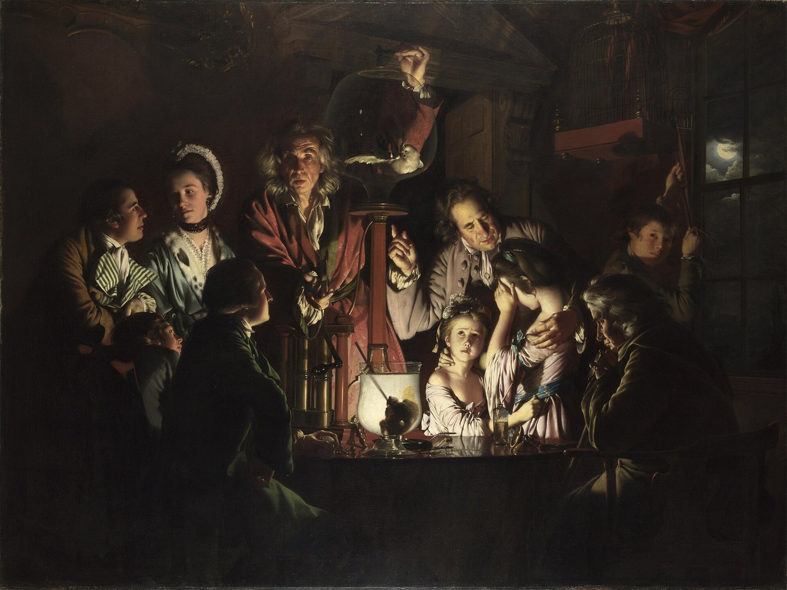
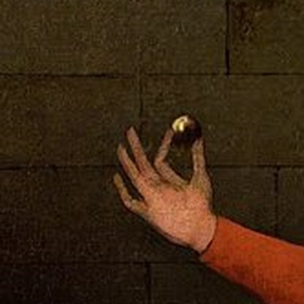
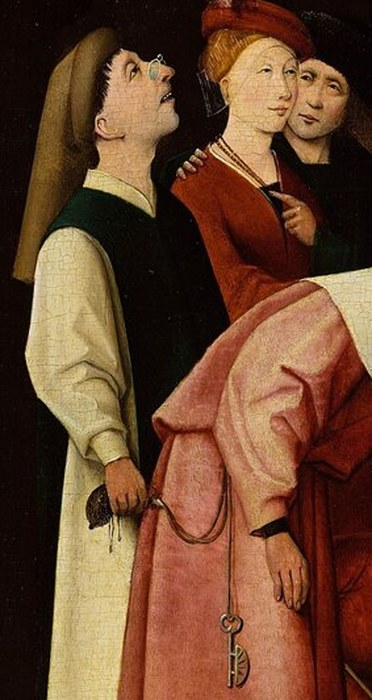

Présentation
Première, lycée général et technologique · English LVA · towards B1+ (B2 tasks for stretch)
Can We Still Trust What We See Online?
In a world of edited, staged and AI-generated images, who decides what we see, and how can we still trust our eyes?
Seven lessons of 55 minutes, minutée sur 52 minutes. Five language activities: reading, listening, writing, speaking in continuous form, spoken interaction. Three evaluations: diagnostic, mid-point and summative.
Final task (Lesson 7): as members of the lycée's Digital Citizenship Council, write an article for the school website (five rules to trust what we see online) and take part in a panel debate: "Should platforms be required to label all edited and AI-generated images?"
The seven lessons

Lesson 1Seeing is believing? The Cottingley Fairies
Lesson 2One photo, many questions: the royal picture of 2024
Lesson 3"Reject the evidence of your eyes": power rewrites images
Lesson 4Deepfakes: when seeing is no longer believing
Lesson 5Inside the bubble: who chooses what we see?
Lesson 6Who should protect us online? Laws, platforms and freedom
Lesson 7Think like a fact-checker: lateral reading
The cover: the art of misdirection


What is misdirection?
Misdirection is the conjurer's main tool. The word combines mis- (wrongly) and direction: it means sending someone's attention the wrong way.
A conjurer does not hide the trick from our eyes. He makes sure we look somewhere else at the right moment: a gesture, a word, a shining object. The trick happens in full view, where nobody is looking.
Misdirection is not a lie told with words. It is a lie told with attention. This is why it matters today: online, images do not only show things, they also decide what we look at, and for how long.
The Conjurer, Saint-Germain-en-Laye
At a fair, in front of a brick wall, a conjurer plays the game of cups and balls on a small table. He holds up a small ball between two fingers; an owl looks out of the basket at his waist; a small dog sits at his feet.
Opposite him, a group of spectators. One man leans so far over the table that a frog seems to come out of his mouth. Behind him, a man in spectacles looks up at the sky, as if he were thinking of something else, and quietly takes the purse from his belt. A child, close to the table, is watching the victim, not the trick.
The conjurer and the thief may be working together: one attracts the eyes, the other takes the money. The museum and the Ministère de la Culture read the painting as a lesson about deception and credulity.
In December 1978 the painting was stolen from the museum, then recovered on 2 February 1979. It is now kept in a safe and rarely shown (Ville de Saint-Germain-en-Laye).
Facts from the Ville de Saint-Germain-en-Laye (Google Arts & Culture), the Ministère de la Culture and Wikipedia.
What we know, and what we are not sure about
Who painted it? For a long time, the label said Hieronymus Bosch. Dating of the wood (dendrochronology) and laboratory analysis showed that it was painted by a talented follower, in the first half of the 16th century. The museum calls it the best of the known versions of a lost original. One name has been proposed for the painter, without certainty.
How many versions? The city speaks of about fifteen versions; Wikipedia counts five versions and one engraving. Sources do not count the same things. Wikipedia still describes the work as "Bosch or his workshop", around 1502: an encyclopedia can be slower than the museum that holds the work.
When was it stolen? Wikipedia gives 1 December 1978, the city of Saint-Germain-en-Laye gives 13 December 1978. Both agree on the return, 2 February 1979. We keep both dates and say that they disagree.
This is exactly the method of the sequence: even a museum label was checked, corrected and dated. A good source says what it knows and what it does not know.
Why this painting opens the sequence
- Look here, not thereThe conjurer sends our eyes towards the ball while the purse disappears. Online, a shocking image, a funny video or a pearl of clickbait can send our attention away from what matters: who made it, who profits, what is missing (Lessons 4 and 5).
- The trick needs a public that wants to believeThe man who leans over the table is not stupid: he wants to see the miracle. In 1983, Frances Griffiths said of the Cottingley fairies: "They wanted to be taken in" (Lesson 1).
- Two people work togetherThe one who attracts the eyes and the one who takes the purse. A fake image and the people who profit from it: power that rewrites photos (Lesson 3), a fake picture that moves the stock market (Lesson 4), algorithms that sell our attention (Lesson 5).
- Even the label was wrongThe painting was called a Bosch until science checked it. Checking who is behind an image, even an official one, is lateral reading (Lesson 7).
- The child sees the truthThe child does not watch the trick: he watches the victim. Sometimes the person who steps back from the show sees what is really happening. This is the attitude the sequence asks for.
Look, think, answer
- Look at the painting for 20 seconds, then hide it. What did you see first?
- Look again. What is the man in spectacles doing?
- Why does the trick work?
- Who is the only person not watching the trick? What is he looking at?
- Is the painting by Hieronymus Bosch? How do we know?
- What is the link with our question?
- Most people see the conjurer, his hand and the ball first.
- He is looking up at the sky and stealing the purse of the man who leans over the table.
- Because everyone is looking at the conjurer's hand: their attention is sent the wrong way. This is misdirection.
- The child: he is looking at the victim.
- No, it is by a follower of Bosch. The wood was dated and analysed in a laboratory, and the attribution was corrected.
- Online, our attention can be sent the wrong way too. To trust what we see, we must look away from the show and check who is behind the image, as the child and the scientists did.
Building your vocabulary
| English | Français |
|---|---|
| misdirection | diversion, détournement de l'attention |
| a conjurer | un escamoteur, un prestidigitateur |
| sleight of hand | un tour de passe-passe |
| a purse | une bourse |
| to steal / stole / stolen | voler |
| to be taken in | se laisser duper |
| gullible | crédule |
| an attribution | une attribution (d'une œuvre) |
Teacher notes: using the cover in class
- Lesson 1, minutes 0 to 5: show the whole painting for 20 seconds, then hide it. Ask: "What did you see?" Most students describe the conjurer and the ball. Very few have seen the theft: this is misdirection, experienced before it is explained.
- Show it again and ask students to find the purse. Then show the three details.
- Say clearly that the attribution and the theft date are uncertain, and why: it is the first lesson in dating and flagging uncertainty.
- Lesson 7, end of the sequence: come back to the cover. "Who are we in this painting: the conjurer, the thief, the victim or the child?"
- Keep the discussion on images and attention. The painting shows a theft, not violence; there is nothing to avoid.
Prof
At a glance
- Class: Première, lycée général et technologique, English LVA (the tasks can be lightened for LVB). Level: towards B1+, the level expected at the end of Première in LVA; some tasks reach B2 for stretch.
- Seven lessons of 55 minutes, minutée sur 52 minutes, with a stop point and a fallback plan.
- Question of the sequence: In a world of edited, staged and AI-generated images, who decides what we see, and how can we still trust our eyes?
- Final task (Lesson 7): as members of the lycée's Digital Citizenship Council, write an article for the school website (five rules to trust what we see online) and take part in a panel debate: "Should platforms be required to label all edited and AI-generated images?".
Programme requirements, objectives and skills
- Reference: programme de langues vivantes du cycle terminal, arrêté du 5 mai 2025, BO n° 22 du 29 mai 2025. It applies in Première from the rentrée 2026.
- Two axes linked by one problem, as the programme allows ("associer deux axes, reliés par une problématique commune, dans une même séquence"): axe 3, Art et pouvoir (objet d'étude: S'engager dans la presse et les médias: dessins, caricatures et photojournalisme) and axe 4, Innovations scientifiques et responsabilité (objet d'étude: Révolutions industrielles, technologiques, numériques et contre-révolutions).
- Openings towards axe 6, Les aires anglophones américaines, compulsory during the year: Harnett and the American trompe-l'oeil (L1), the fake Pentagon image (L4), the First Amendment (L6), the Stanford study on lateral reading (L7). Axe 6 still needs its own sequence.
- Expected levels at the end of Première: B1+ in LVA, B1 in LVB. The five language activities are practised and evaluated: CE, CO, EE, EOC, EOI. Mediation (summarising a document for someone, in French or English) is practised in Lessons 2, 5 and 6.
- Exam link: the end-of-Première written test for individual candidates (note de service du 3 juillet 2026, BO n° 30 du 23 juillet 2026) lasts 1 h 30: CE on one or two documents of 2,300 to 4,000 signs, with a compte rendu in French or English as instructed, then EE; 10 + 10 points, B1 to B2 in LVA. The summative evaluation (L7) reproduces this format. In odd years, this test covers axes 3, 5 and 6: this sequence prepares axe 3.
- Voie technologique: at least three axes in the year; this sequence counts for axes 3 and 4.
Official texts: BO n° 22 du 29 mai 2025 · programme d'anglais, Première et Terminale (PDF) · Éduscol, langues vivantes voie GT · note de service du 3 juillet 2026 · évaluation LVA et LVB (académie de Strasbourg).
Objectives of the sequence
- Cultural and civic: know dated cases of manipulated images (Cottingley 1917, Stalin's retouched photos 1937 to 1940, the royal photo of 2024, the fake Pentagon image of 2023) and compare how the UK, Australia, the EU and the USA answer the problem.
- Art and power (axe 3): understand that images of power are built (Rigaud, 1701) and that controlling images is a way of controlling people (Orwell, 1949).
- Science and responsibility (axe 4): understand deepfakes, recommendation algorithms and age checks, and discuss who should be responsible.
- Critical thinking: lateral reading and the SIFT method; telling a fact from an opinion; flagging uncertainty.
- Language: narrative tenses; the passive with reporting verbs; have something done; past modals of deduction; concession and contrast; should and ought to with the passive; reported speech.
- Methods: flashcards made by students, a French spelling corner each lesson, a framed written summary, short homework checked at the start of every lesson.
Sequence map
| Lesson | Title | Video | Grammar | Evaluation |
|---|---|---|---|---|
| 1 | Seeing is believing? The Cottingley Fairies | BBC Archive (first broadcast on BBC One, 25 November 1976) (8:36) | Narrative tenses | Diagnostic evaluation |
| 2 | One photo, many questions: the royal picture of 2024 | Sky News (2:30) | The passive with reporting verbs | |
| 3 | "Reject the evidence of your eyes": power rewrites images | Noah Tavlin, TED-Ed (5:32) | have something done | |
| 4 | Deepfakes: when seeing is no longer believing | Science Museum, with Henry Ajder (7:59) | Past modals of deduction | Mid-point evaluation |
| 5 | Inside the bubble: who chooses what we see? | Eli Pariser, TED (9:05) | Concession and contrast | Mid-point evaluation, oral part (group A) |
| 6 | Who should protect us online? Laws, platforms and freedom | BBC News (10:48) | Making recommendations: should, ought to, the passive, it's high time | Mid-point evaluation, oral part (group B) |
| 7 | Think like a fact-checker: lateral reading | Digital Inquiry Group (formerly Stanford History Education Group) (3:47) | Reported speech and reporting verbs | Summative evaluation |
Classroom routines
- Talking round: every student says at least one sentence, using the frame on the board. Tick names on the class list; nobody leaves without speaking. A student who freezes may read the frame aloud and add one word of their own.
- Flashcards: students make four cards each lesson (front: word and drawing; back: translation and their own sentence). Two-minute flashcard battle at the start of the next lesson.
- Homework: short, always corrected on the board in the first three minutes of the next lesson.
- French spelling corner: two minutes, one common French spelling difficulty linked to the topic, with a corrected exercise. Students who need more practice can use the Étude de la langue materials allowed by the school.
- Written summary (trace écrite): framed, copied in the exercise book, read aloud by one student.
Lesson 1 · Seeing is believing? The Cottingley Fairies Diagnostic evaluation
CE CO PE PO PI
An American trompe-l'oeil. According to the National Gallery of Art, when it was shown in Cincinnati in 1886, a police guard was needed to stop disbelieving visitors from touching it.
Aims:
- Discover the problem of the sequence through a famous British hoax (1917 to 1983).
- Tell a story in the past with narrative tenses.
- Take the diagnostic evaluation in the five language activities.
Skills and programme: CO, CE, EE, EOC, EOI. Axe 3: photography and the press. Axe 6 opening: an American trompe-l'oeil (Harnett).
| Minutes | Activity |
|---|---|
| 0 to 5 | Welcome. Write the title and the question of the sequence on the board; students copy them. Explain the final task. Cover (Presentation tab): show The Conjurer for 20 seconds, hide it, ask "What did you see?", then show it again and find the purse together. |
| 5 to 10 | Art starter, diagnostic EOC. Harnett, The Old Violin, shown for ten seconds without the title. Talking round: "I think it is... because...". Reveal: a painting so real that a police guard was needed in 1886. |
| 10 to 20 | Diagnostic CO: video 1, extract 2:28 to 7:20, watched twice. Five tasks. |
| 20 to 28 | Diagnostic CE: "The fairies at the bottom of the garden". Five questions. |
| 28 to 34 | Building your vocabulary: twelve words; students make four flashcards. Diagnostic EOI in pairs, one minute: "Would you have believed the photos in 1920?" |
| 34 to 40 | Étude de la langue: narrative tenses. Corrected exercise. |
| 40 | STOP POINT. If you are late, go straight to the written summary and set the EE task as homework. |
| 40 to 46 | Diagnostic EE: a short news report written in 1983, 80 to 100 words. |
| 46 to 50 | Written summary (trace écrite), copied in the exercise book; one student reads it aloud. |
| 50 to 52 | French spelling corner (ou / où). Homework set. |
52 minutes planned out of 55: three minutes for settling in and packing up.
Video
1976: COTTINGLEY FAIRIES: FACT or FANTASY? | Nationwide
BBC Archive (first broadcast on BBC One, 25 November 1976) · uploaded 9 March 2024 · length 8:36
Link: https://www.youtube.com/watch?v=1Z7zSGzdgTU&t=148s
What we watch: Extract 2:28 to 7:20 (about 5 minutes), watched twice (diagnostic evaluation). Start the video at 2:28 with the link below.
Timings (to within a few seconds):
- 2:28 "From the moment that photograph was taken back in 1917...": the reporter sums up the facts.
- 2:51 The original plates are kept at the Brotherton Library, Leeds University.
- 3:14 The first photographic expert finds no trace of studio work: "entirely genuine".
- 3:47 Sir Arthur Conan Doyle, the creator of Sherlock Holmes, becomes involved.
- 3:59 The girls receive a second camera and plates that were secretly marked.
- 4:24 The publicity is enormous.
- 4:57 Elsie, in her 75th year, comes back to Cottingley about sixty years later.
- 5:20 Interview: Elsie still says she saw a gnome.
- 6:47 "People said I must have drawn and painted them myself."
- 7:20 Stop here.
In 1976, Elsie and Frances had not yet confessed. Students know the end of the story (1983) only after the video: let them judge first. The programme says Elsie was 15 in 1917; the BBC in 2020 says 16 in July 1917. This difference is used in the reading questions.
Every student speaks
Talking round: every student says at least one sentence, using the frame on the board. Tick names on the class list; nobody leaves without speaking. A student who freezes may read the frame aloud and add one word of their own.
Lesson 2 · One photo, many questions: the royal picture of 2024
CE CO PE PO PI
Three images of one man: seen from behind, in a mirror and on the canvas. Which one is the real Gumpp? Every portrait is a chosen version.
Aims:
- Understand how news agencies check photos and why they withdrew one in March 2024.
- Use the passive with reporting verbs to report facts with caution.
- Summarise a news event for someone who has not followed it (mediation).
Skills and programme: CO, CE, EOC, EOI, mediation. Axe 3: photojournalism and the image of institutions.
| Minutes | Activity |
|---|---|
| 0 to 3 | Homework check (correction on the board). Flashcard battle: in pairs, students test each other with Lesson 1 cards. |
| 3 to 8 | Art starter: Gumpp, Self-Portrait (1646). Talking round: "I can see him from behind / in the mirror / on the canvas. The real one is... because...". |
| 8 to 17 | CO: video 2 (2:30), watched twice. Five tasks. |
| 17 to 25 | CE: "What is a kill notice?" Five questions. |
| 25 to 31 | Building your vocabulary; four new flashcards. |
| 31 to 37 | Étude de la langue: the passive with reporting verbs. Corrected exercise. |
| 37 | STOP POINT. If you are late, skip the mediation task and go straight to the written summary. |
| 37 to 44 | Mediation (EOI): A explains the story to B, who has not seen the news; B asks two questions. Swap with the questions on the worksheet. |
| 44 to 49 | Written summary, copied and read aloud. |
| 49 to 52 | French spelling corner (peu / peut / peux). Homework set. |
52 minutes planned out of 55: three minutes for settling in and packing up.
Video
How Kate manipulated the royal Mother's Day family picture
Sky News · 11 March 2024 · length 2:30
Link: https://www.youtube.com/watch?v=y-sKPMJJgC8
What we watch: Whole video, watched twice.
Timings (to within a few seconds):
- 0:00 Global picture agencies issue a "kill notice" on the photo.
- 0:29 AFP explains it was told "not to trust the most trustable third party image".
- 0:57 Social media users point at details of the photo.
- 1:07 The metadata: a Canon camera, Adelaide Cottage, the file opened and saved twice in Adobe Photoshop.
- 1:52 A photographer: nearly all images we see online are edited.
- 2:16 Closing question: where should the line be drawn?
Keep the discussion on photojournalism standards and on the image, never on anyone's health or private life. Rumours that followed the photo are not discussed in class.
Every student speaks
Talking round: every student says at least one sentence, using the frame on the board. Tick names on the class list; nobody leaves without speaking. A student who freezes may read the frame aloud and add one word of their own.
Lesson 3 · "Reject the evidence of your eyes": power rewrites images
CE CO PE PO PI
The king is 63, but the portrait gives him the legs of a young dancer. An official image is built to show power, not to copy the body.
Aims:
- Understand how political power has controlled images (Rigaud 1701, Stalin's photos 1937 to 1940, Orwell 1949).
- Use have something done to say who ordered an action.
- Write a short argued paragraph.
Skills and programme: CO, CE, EE, EOC, EOI. Axe 3, Art et pouvoir: how images of power are built and how they are erased.
| Minutes | Activity |
|---|---|
| 0 to 3 | Homework check. Flashcard battle. |
| 3 to 9 | Art starter: Rigaud, Louis XIV (1701). Talking round: "The king looks... The portrait shows...". Reveal: the king was 63; his young legs are an image of power. |
| 9 to 20 | CO: video 3 (5:32). First viewing whole; second viewing 1:40 to 3:50. Five tasks. |
| 20 to 28 | CE: "The commissar vanishes". Students look at the before and after photos on the Newseum page (link in the Sources). Five questions. |
| 28 to 33 | Building your vocabulary; four flashcards. |
| 33 to 39 | Étude de la langue: have something done. Corrected exercise. |
| 39 | STOP POINT. If you are late, set the EE task as homework and go to the written summary. |
| 39 to 46 | EE: 100 to 120 words, "Is changing a photo of a leader always a lie?" |
| 46 to 50 | Written summary. |
| 50 to 52 | French spelling corner (ce / se). Homework set. |
52 minutes planned out of 55: three minutes for settling in and packing up.
Video
What "Orwellian" really means
Noah Tavlin, TED-Ed · 1 October 2015 · length 5:32
Link: https://www.youtube.com/watch?v=oe64p-QzhNE
What we watch: Whole video. First viewing: whole video. Second viewing: 1:40 to 3:50.
Timings (to within a few seconds):
- 0:20 Eric Blair, better known by his pen name, George Orwell.
- 1:40 The Ministry of Truth and its propaganda.
- 1:53 Doublespeak.
- 2:17 Newspeak.
- 2:30 Doublethink.
- 3:15 This can happen in democratic societies too.
- 3:28 Orwell's essay "Politics and the English Language".
- 3:50 Advertising and political soundbites.
- 4:23 "Orwellian" is often used for any idea people dislike.
- 4:46 "Words have the power to shape thought."
Every student speaks
Talking round: every student says at least one sentence, using the frame on the board. Tick names on the class list; nobody leaves without speaking. A student who freezes may read the frame aloud and add one word of their own.
Lesson 4 · Deepfakes: when seeing is no longer believing Mid-point evaluation
CE CO PE PO PI
A woman lights the pipe of a man on a distant hill; sheep grow bigger as they move away. Impossible details, like the errors that give away a fake image.
Aims:
- Understand what deepfakes are, how they are detected and what they can do (Pentagon image, 22 May 2023).
- Use past modals of deduction to analyse an image.
- Take the mid-point evaluation.
Skills and programme: CO, CE, EE, EOC, EOI. Axe 4: technological innovation and responsibility. Axe 6 opening: a fake image in the USA.
| Minutes | Activity |
|---|---|
| 0 to 3 | Homework check. Flashcard battle. |
| 3 to 8 | Art starter: Hogarth, Satire on False Perspective. In pairs, find three impossible details in two minutes. Talking round: "This can't be right because...". |
| 8 to 18 | Mid-point CO: video 4, extract 3:30 to 7:59, watched twice. Five tasks. |
| 18 to 26 | Mid-point CE: "The explosion that never happened". Five questions. |
| 26 to 30 | Building your vocabulary; four flashcards. |
| 30 to 36 | Étude de la langue: past modals of deduction. Corrected exercise. |
| 36 | STOP POINT. If you are late, the EE becomes homework; keep the oral evaluation for Lesson 5. |
| 36 to 46 | Mid-point EE: a fact-check of the Pentagon image, 120 to 150 words. |
| 46 to 50 | Written summary. |
| 50 to 52 | French spelling corner (-ai / -ais). Homework set. Mid-point EOC and EOI take place in the first 15 minutes of Lesson 5. |
52 minutes planned out of 55: three minutes for settling in and packing up.
Video
Inside Celebrity Deepfakes and famous TV Hoaxes
Science Museum, with Henry Ajder · 21 August 2025 · length 7:59
Link: https://www.youtube.com/watch?v=kCogqgVYPQU&t=210s
What we watch: Extract 3:30 to 7:59 (4 min 29 s), watched twice (mid-point evaluation). Start the video at 3:30 with the link below.
Timings (to within a few seconds):
- 3:52 A deepfake of President Zelensky is hacked onto Ukrainian television: the first deepfake used in a war.
- 4:20 The clues: the shape of the head is wrong and the lighting does not match.
- 4:38 A fake audio clip of the Mayor of London, Sadiq Khan, in November 2023.
- 5:38 Advice: if a video makes you very angry or scared, take a step back and wait for several sources.
- 5:57 A deepfake made by Channel 4 in 2025 for an investigation about elections.
- 6:46 "We can't expect people to be digital Sherlocks."
- 7:05 Governments, businesses and news media must provide authentication and transparency.
- 7:21 Closing advice.
Keep the focus on the method. The examples involve public figures from different countries; no political comment is needed or expected.
Every student speaks
Talking round: every student says at least one sentence, using the frame on the board. Tick names on the class list; nobody leaves without speaking. A student who freezes may read the frame aloud and add one word of their own.
Lesson 5 · Inside the bubble: who chooses what we see? Mid-point evaluation, oral part (group A)
CE CO PE PO PI
Narcissus can only see his own reflection: a filter bubble before the internet. The attribution to Caravaggio is debated; some experts propose Spadarino.
Aims:
- Understand how recommendation algorithms select what each of us sees (Pariser, 2011).
- Express concession and contrast to build a nuanced argument.
- Summarise an English talk in French for someone who does not speak English (mediation).
Skills and programme: CO, CE, EOC, EOI, mediation into French. Axe 4: digital revolutions and their counter-effects.
| Minutes | Activity |
|---|---|
| 0 to 12 | Mid-point oral, group A (half the class): EOC one minute each, EOI in pairs, with the grid. Group B corrects its homework with the answer sheet, then reads the CE text silently and answers questions 1 to 3. |
| 12 to 16 | Art starter: Narcissus. Talking round: "He can only see... It reminds me of...". Say that the attribution is debated. |
| 16 to 27 | CO: video 5. First viewing 0:15 to 4:30, second viewing 4:00 to 7:55. Five tasks. |
| 27 to 33 | CE: "Inside the bubble", questions 4 and 5 for group B, all five for group A; correction. |
| 33 to 37 | Building your vocabulary; four flashcards. |
| 37 to 42 | Étude de la langue: concession and contrast. Corrected exercise. |
| 42 | STOP POINT. If you are late, set the mediation as homework and go to the written summary. |
| 42 to 47 | Mediation (EE into French): five lines to explain Pariser's idea to a parent who does not speak English. |
| 47 to 50 | Written summary. |
| 50 to 52 | French spelling corner (quel / qu'elle). Homework set. |
52 minutes planned out of 55: three minutes for settling in and packing up.
Video
Beware online "filter bubbles"
Eli Pariser, TED · 2 May 2011 · length 9:05
Link: https://www.youtube.com/watch?v=B8ofWFx525s&t=15s
What we watch: Extract 0:15 to 7:55 (7 min 40 s). First viewing: 0:15 to 4:30. Second viewing: 4:00 to 7:55.
Timings (to within a few seconds):
- 0:15 A quotation from Mark Zuckerberg about a squirrel dying in your front yard.
- 1:26 Conservative friends disappear from Pariser's Facebook feed.
- 2:12 Google uses 57 signals: "there is no standard Google anymore".
- 2:44 Two friends search "Egypt" and get very different results.
- 4:07 Definition of the filter bubble.
- 5:31 Information junk food.
- 6:22 Human gatekeepers are replaced by algorithmic ones, without embedded ethics.
- 7:03 In 1915, newspapers developed journalistic ethics.
- 7:55 Stop here.
The talk dates from 2011: ask students what has changed since (short videos, recommendation feeds). It is a reason to date every source.
Every student speaks
Talking round: every student says at least one sentence, using the frame on the board. Tick names on the class list; nobody leaves without speaking. A student who freezes may read the frame aloud and add one word of their own.
Lesson 6 · Who should protect us online? Laws, platforms and freedom Mid-point evaluation, oral part (group B)
CE CO PE PO PI
Seen from the open side, the box is a jumble. Through the peephole, a perfect house appears. Whoever builds the box decides what we see.
Aims:
- Compare how the UK, Australia, the EU and the USA answer the problem (dated facts).
- Make recommendations with should, ought to and the passive.
- Debate in a group with nuanced agreement and disagreement.
Skills and programme: CO, CE, EOI, EOC. Axe 4: innovation and responsibility. Axe 6 opening: the First Amendment. Neutral presentation of every position.
| Minutes | Activity |
|---|---|
| 0 to 12 | Mid-point oral, group B. Group A corrects the homework with the answer sheet, then reads the CE text silently and answers questions 1 to 3. |
| 12 to 16 | Art starter: Hoogstraten, A Peepshow. Talking round: "From the side it looks..., but through the hole...". Who builds the box? |
| 16 to 27 | CO: video 6, extracts 0:45 to 4:29 and 5:09 to 7:11; second viewing 5:09 to 7:11. Five tasks. |
| 27 to 34 | CE: "Three countries, three answers". Correction. |
| 34 to 37 | Building your vocabulary; four flashcards. |
| 37 to 42 | Étude de la langue: recommendations, should and ought to with the passive; it's high time. Corrected exercise. |
| 42 | STOP POINT. If you are late, keep the debate for the start of Lesson 7 (five minutes) and go to the written summary. |
| 42 to 48 | EOI: debate in groups of four, one role card each (a parent, a platform's spokesperson, a defender of freedom of speech, a 17-year-old). |
| 48 to 50 | Written summary. |
| 50 to 52 | French spelling corner (davantage / d'avantage). Homework set. |
52 minutes planned out of 55: three minutes for settling in and packing up.
Video
This is how social media will check how old you are
BBC News · 29 October 2026 · length 10:48
Link: https://www.youtube.com/watch?v=6SjRmacj9SU&t=45s
What we watch: Two extracts: 0:45 to 4:29, then 5:09 to 7:11 (about 5 min 45 s). Skip 4:29 to 5:09.
Timings (to within a few seconds):
- 0:45 How can a ban be enforced?
- 1:20 Australia: a reporter opens accounts as a 14-year-old; teenagers say the ban is not working.
- 3:20 Ofcom's four ways to check age: digital ID, a passport or driving licence, facial scans, banking details.
- 4:29 Skip to 5:09.
- 5:09 The responsibility lies with tech companies: fines, and geo-blocking as a last resort; companies prefer checks on the device.
- 6:36 How the UK ban would work: TikTok, Snapchat, YouTube, Instagram and Facebook included, WhatsApp not; limits for 16 and 17-year-olds at night.
- 7:11 Stop here.
The segment from 4:29 to 5:09 deals with adult content: it is skipped. Present every position neutrally: protection of children, freedom of expression, privacy of data.
Every student speaks
Talking round: every student says at least one sentence, using the frame on the board. Tick names on the class list; nobody leaves without speaking. A student who freezes may read the frame aloud and add one word of their own.
Lesson 7 · Think like a fact-checker: lateral reading Summative evaluation
CE CO PE PO PI
A travelling scientist performs like a magician. Some watch, one looks away, two young people only look at each other. Science asks us to look carefully.
Aims:
- Understand lateral reading and the SIFT method.
- Use reported speech and reporting verbs.
- Take the summative evaluation in the end-of-Première exam format, then carry out the final task.
Skills and programme: CO, CE (compte rendu), EE, then EOC and EOI in the next lesson. Axes 3 and 4; axe 6 opening: the Stanford study.
| Minutes | Activity |
|---|---|
| 0 to 3 | Homework check: pairs compare their five rules. |
| 3 to 6 | Art starter and return to the cover: Wright of Derby, then The Conjurer: "Who are we in this painting: the conjurer, the thief, the victim or the child?" |
| 6 to 14 | Summative CO: video 7 (3:47), watched twice. Five tasks. |
| 14 to 29 | Summative CE: "Think like a fact-checker" (about 2,400 signs). Compte rendu in French, as in the end-of-Première written test. |
| 29 to 32 | Building your vocabulary; four flashcards. |
| 32 to 36 | Étude de la langue: reported speech and reporting verbs. Corrected exercise (oral). |
| 36 | STOP POINT. If you are late, the EE is written at home and handed in at the next lesson; the final oral takes place in the next lesson. |
| 36 to 48 | Summative EE: the article for the school website, 180 to 220 words. |
| 48 to 50 | Written summary of the sequence. |
| 50 to 52 | French spelling corner (tout / tous / toutes). Final oral (EOC and EOI) in the next lesson. |
52 minutes planned out of 55: three minutes for settling in and packing up.
Video
Sort Fact from Fiction Online with Lateral Reading
Digital Inquiry Group (formerly Stanford History Education Group) · 16 January 2020 · length 3:47
Link: https://www.youtube.com/watch?v=SHNprb2hgzU
What we watch: Whole video, watched twice (summative evaluation).
Timings (to within a few seconds):
- 0:00 The key question: who is behind the information?
- 0:40 Students and professors read "vertically": they stay on the page and trust logos and a .org address.
- 1:20 Fact-checkers open new tabs and read "laterally".
- 1:50 The example: a website run by a lobbying firm, not by neutral researchers.
- 2:33 Only 40% of Stanford students made the link, against 100% of fact-checkers.
- 3:10 Lateral reading can be taught.
Every student speaks
Talking round: every student says at least one sentence, using the frame on the board. Tick names on the class list; nobody leaves without speaking. A student who freezes may read the frame aloud and add one word of their own.
Sources and why we use them
| Source | Why we use it |
|---|---|
| Arrêté du 5 mai 2025, programmes de langues vivantes du cycle terminal, BO n° 22 du 29 mai 2025 | The official text: axes 3, 4 and 6, the levels expected at the end of Première (B1+ in LVA) and the possibility of linking two axes in one sequence. |
| Programme d'anglais, Première et Terminale (PDF, académie de Strasbourg) | The full English programme with the guiding questions and objets d'étude quoted in the Prof tab. |
| Note de service du 3 juillet 2026, évaluations ponctuelles de LVA et LVB, BO n° 30 du 23 juillet 2026 | Gives the end-of-Première written format (1 h 30, CE with compte rendu, EE) reproduced in the summative evaluation. |
| Éduscol, langues vivantes voie GT | Official resources for the new programme. |
| BBC News, Cottingley Fairies: How Sherlock Holmes's creator was fooled by hoax, 5 December 2020 | Dates, ages, the Strand article of December 1920, the 1983 confession and Frances Griffiths's words. Lesson 1. |
| University of Leeds Library, Fooled by fairies | The library that holds the original material confirms the story. Lesson 1. |
| National Gallery of Art, Harnett, The Old Violin | The museum's account of the police guard at the 1886 exhibition. Lesson 1. |
| Press Gazette, Four news agencies withdraw manipulated Kate family photo, March 2024 | A trade magazine for journalists: which agencies issued kill notices and when. Lesson 2. |
| BBC News, How might Kate's photo have been edited?, 11 March 2024 | The exact apology statement and the AP photo standards. Lesson 2. |
| Tate Etc., Revelation and erasure (David King collection) | A museum source on the Soviet retouched photographs collected by David King. Lesson 3. |
| Newseum ED, Photographic lies in Stalin's Russia | Shows the 1937 photo of Yezhov before and after his removal; students look at it on the original site. Lesson 3. |
| Hoover Institution, Inside Stalin's darkroom | A second, independent account of the same retouching. Lesson 3. |
| Musée du Louvre, Hyacinthe Rigaud, Louis XIV | Official museum record of the portrait. Lesson 3. |
| Château de Versailles, ressource pédagogique, Louis XIV par Hyacinthe Rigaud (PDF) | Explains how the portrait builds an image of power. Lesson 3. |
| AP News, Fake image of Pentagon explosion, 22 May 2023 | A news agency report on the image and the brief fall of the stock market. Lesson 4. |
| NPR, Fake viral images of an explosion at the Pentagon were probably created by AI, 22 May 2023 | Gives Hany Farid's analysis of the visual errors. Lesson 4. |
| AFP Fact Check, Pentagon explosion image | A second fact check of the same image: serious sources confirm each other. Lesson 4. |
| Full Fact, How to spot deepfakes | A British fact-checking charity's advice, used in Lessons 4 and 7. |
| Public Domain Review, Hogarth's Satire on False Perspective | Explains the print and its caption. Lesson 4. |
| Finestre sull'Arte, Caravaggio or Spadarino? The story of the Narcissus | Shows why the attribution of the Narcissus is uncertain. Lesson 5. |
| GOV.UK, Online Safety Act collection | Official UK source for the law and its timetable. Lesson 6. |
| GOV.UK, Keeping children safe online: changes to the Online Safety Act explained, 1 August 2025 | Fines (up to £18 million or 10% of global revenue) and the duty to protect freedom of expression. Lesson 6. |
| House of Commons Library, Online Safety Act research briefing | Parliament's neutral summary, including the debate on freedom of speech. Lesson 6. |
| GOV.UK, Fact sheet: new rules to protect children online, updated 18 September 2026 | Official details of the planned ban for under-16s from spring 2027. Lesson 6. |
| eSafety Commissioner (Australia), Social media age restrictions | Official Australian source: in force since 10 December 2025, fines for platforms. Lesson 6. |
| Constitution Annotated (US Congress), First Amendment | The text of the First Amendment, for the American point of view. Lesson 6. |
| European Commission, transparency obligations under Article 50 of the AI Act | Official EU source: Article 50 applies from 2 August 2026 and requires deepfakes to be disclosed. Lessons 6 and 7. |
| Princeton University Library, SIFT (The Four Moves) | Presents the SIFT method used in Lesson 7. |
| Digital Inquiry Group, Civic Online Reasoning | The research group, first based at Stanford, behind the lateral reading study. Lesson 7. |
| Ville de Saint-Germain-en-Laye, L'Escamoteur (Google Arts & Culture) | The museum's own account of the cover: attribution, versions, theft and recovery. Presentation. |
| Ministère de la Culture, exposition L'Escamoteur | Official description of the scene and its message. Presentation. |
All texts in the lessons were written for the class from these sources. Protected texts are not reproduced: videos are watched on their original pages.
Documents to download
Artworks and credits
Cover, then one different work per lesson; no image is used twice.
- Follower of Hieronymus Bosch, The Conjurer (L'Escamoteur), first half of the 16th century, Musée municipal, Saint-Germain-en-Laye. Wikimedia Commons, public domain.
- William Michael Harnett, The Old Violin, 1886, National Gallery of Art, Washington. Wikimedia Commons, public domain.
- Johannes Gumpp, Self-Portrait, 1646, Gallerie degli Uffizi, Florence. Wikimedia Commons, public domain.
- Hyacinthe Rigaud, Louis XIV, 1701, Musée du Louvre, Paris. Wikimedia Commons, public domain.
- William Hogarth (design), engraved by Luke Sullivan, Satire on False Perspective, 1754 (this impression printed later), Yale Center for British Art, New Haven. Wikimedia Commons, public domain.
- Attributed to Caravaggio, Narcissus, c. 1597 to 1599, Gallerie Nazionali di Arte Antica, Palazzo Barberini, Rome. Wikimedia Commons, public domain.
- Samuel van Hoogstraten, A Peepshow with Views of the Interior of a Dutch House, about 1655 to 1660, National Gallery, London. Wikimedia Commons, public domain.
- Joseph Wright of Derby, An Experiment on a Bird in the Air Pump, 1768, National Gallery, London. Wikimedia Commons, public domain.
Élève
Our question
In a world of edited, staged and AI-generated images, who decides what we see, and how can we still trust our eyes?
At the end of the sequence, you will sit on the lycée's Digital Citizenship Council. You will write an article for the school website, five rules to trust what we see online, and take part in a panel debate: should platforms be required to label all edited and AI-generated images?
Lesson 1 · Seeing is believing? The Cottingley Fairies Diagnostic evaluation
CE CO PE PO PI
An American trompe-l'oeil. According to the National Gallery of Art, when it was shown in Cincinnati in 1886, a police guard was needed to stop disbelieving visitors from touching it.
In this lesson, you will:
- Discover the problem of the sequence through a famous British hoax (1917 to 1983).
- Tell a story in the past with narrative tenses.
- Take the diagnostic evaluation in the five language activities.
Building your vocabulary
| English | French |
|---|---|
| a hoax | un canular |
| a fake | un faux |
| genuine | authentique |
| to fake / faked | truquer |
| a cut-out | une découpe (en papier) |
| evidence (uncountable) | des preuves |
| to fool someone | duper quelqu'un |
| to be taken in | se laisser duper |
| to confess | avouer |
| to claim | affirmer, prétendre |
| an expert | un expert |
| a trompe-l'oeil | un trompe-l'œil |
Étude de la langue: Narrative tenses
- Past simple for the main events: Elsie took the photo in 1917.
- Past continuous for the background, an action in progress: Frances was standing by the stream when Elsie took the photo.
- Past perfect for an earlier past: In 1983, they admitted that they had faked the photos.
- Time markers: when, while, by the time, until, sixty years later.
Exercise. Complete.
- In July 1917, Elsie ______ (borrow) her father's camera.
- Frances ______ (play) by the stream when the first photo was taken.
- By 1920, the photos ______ (already / reach) Conan Doyle.
- In 1983, the cousins confessed that they ______ (use) paper cut-outs.
- While the experts ______ (examine) the plates, the public was waiting.
- Conan Doyle ______ (publish) the photos in December 1920.
- borrowed
- was playing
- had already reached
- had used
- were examining
- published
French spelling corner: ou ou où ?
« ou » sans accent indique un choix : on peut le remplacer par « ou bien ». « où » avec accent indique le lieu ou le moment : « la maison où », « le jour où ».
- Vrai ___ faux : ces fées sont-elles réelles ?
- C'est dans le jardin ___ les cousines jouaient.
- Le jour ___ elles ont avoué, en 1983, l'affaire s'est terminée.
- Une photo truquée ___ une simple erreur ?
- ou
- où
- où
- ou
Flashcards
Make four flashcards. Front: the English word and a small drawing or symbol. Back: the French translation and one example sentence of your own, in the past. Keep them in an envelope: they are used at the start of Lesson 2.
Homework
- Learn the twelve words of Building your vocabulary.
- Gap-fill worksheet: put the verbs in the correct tense.
- 1. In 1917, Elsie ______ (take) a photo while Frances ______ (look) at the camera.
- 2. By 1983, the photos ______ (fool) people for more than sixty years.
- 3. Conan Doyle ______ (not / know) that the girls ______ (use) cut-outs.
- 4. Write one sentence about a time someone was taken in by a photo (it can be invented).
- 1. took / was looking
- 2. had fooled
- 3. did not know / had used
- 4. Example: Last year my cousin shared a photo of a shark in a street; he didn't know it had been edited.
Lesson 2 · One photo, many questions: the royal picture of 2024
CE CO PE PO PI
Three images of one man: seen from behind, in a mirror and on the canvas. Which one is the real Gumpp? Every portrait is a chosen version.
In this lesson, you will:
- Understand how news agencies check photos and why they withdrew one in March 2024.
- Use the passive with reporting verbs to report facts with caution.
- Summarise a news event for someone who has not followed it (mediation).
Building your vocabulary
| English | French |
|---|---|
| a news agency | une agence de presse |
| a kill notice | un avis de retrait |
| to withdraw / withdrew / withdrawn | retirer |
| to release a photo | diffuser une photo |
| metadata | les métadonnées |
| to edit | retoucher, modifier |
| misleading | trompeur |
| standards | les règles, les normes |
| an apology | des excuses |
| to apologise | s'excuser |
| trust | la confiance |
| to draw the line | fixer la limite |
Étude de la langue: The passive with reporting verbs
- To report information without saying who says it, or with caution: It is said that the photo was edited.
- Personal form: The photo is thought to be genuine. The photo is said to have been edited (to have been + past participle for the past).
- Common verbs: say, think, believe, report, claim, know, expect.
- In journalism, these forms show the difference between a checked fact and a claim.
Exercise. Complete.
- People say that the photo was edited.: The photo ______ edited.
- Experts think that the file was saved twice.: It ______ that the file was saved twice.
- People believe that agencies check every image.: Agencies ______ check every image.
- Reports say that four agencies withdrew the photo.: Four agencies ______ withdrawn the photo.
- People know that most online photos are edited.: It ______ that most online photos are edited.
- They claim that the image is genuine.: The image ______ genuine.
- is said to have been
- is thought
- are believed to
- are reported to have
- is known
- is claimed to be
French spelling corner: peu, peut ou peux ?
« peu » signifie « pas beaucoup ». « peut » et « peux » viennent du verbe pouvoir : « il / elle peut », « je / tu peux ». Astuce : remplacez par « pouvait » ; si cela fonctionne, c'est le verbe.
- Une agence ___ retirer une photo en quelques minutes.
- Très ___ de lecteurs vérifient les métadonnées.
- Tu ___ demander qui a pris la photo.
- Je ___ dire que cette image a été retouchée.
- peut
- peu
- peux
- peux
Flashcards
Make four flashcards with the words of the lesson. On the back, write one sentence using the passive with a reporting verb (example: The photo is said to have been edited).
Homework
- Learn the vocabulary of Lesson 2.
- Rewrite with a passive and a reporting verb.
- 1. People say that the photo was edited.
- 2. Experts believe that agencies check every detail.
- 3. Journalists report that the file was saved twice.
- 4. In one sentence: where would you draw the line between editing and lying?
- 1. The photo is said to have been edited. / It is said that the photo was edited.
- 2. Agencies are believed to check every detail.
- 3. The file is reported to have been saved twice.
- 4. Example: Changing the light is acceptable, but adding or removing a person is a lie.
Lesson 3 · "Reject the evidence of your eyes": power rewrites images
CE CO PE PO PI
The king is 63, but the portrait gives him the legs of a young dancer. An official image is built to show power, not to copy the body.
In this lesson, you will:
- Understand how political power has controlled images (Rigaud 1701, Stalin's photos 1937 to 1940, Orwell 1949).
- Use have something done to say who ordered an action.
- Write a short argued paragraph.
Building your vocabulary
| English | French |
|---|---|
| propaganda | la propagande |
| to erase | effacer |
| to airbrush out | faire disparaître (d'une photo) |
| a purge | une purge |
| to rewrite history | réécrire l'histoire |
| a regime | un régime |
| to glorify | glorifier |
| a portrait | un portrait |
| authoritarian | autoritaire |
| doublethink | la double pensée |
| to shape thought | façonner la pensée |
| Orwellian | orwellien |
Étude de la langue: have something done
- have + object + past participle: someone else does the action, at the request of the subject.
- Stalin had Yezhov removed from the photo. (Stalin did not do it himself.)
- Louis XIV had his portrait painted by Rigaud.
- get something done is more informal: I got my photo edited.
Exercise. Complete.
- Louis XIV / his portrait / paint / in 1701
- Stalin / Yezhov / remove / from the photo
- The palace / the photo / check
- I / my profile picture / retouch (get)
- The regime / the archives / rewrite
- The museum / the painting / analyse / in a laboratory
- Louis XIV had his portrait painted in 1701.
- Stalin had Yezhov removed from the photo.
- The palace had the photo checked.
- I got my profile picture retouched.
- The regime had the archives rewritten.
- The museum had the painting analysed in a laboratory.
French spelling corner: ce ou se ?
« se » est un pronom placé devant un verbe : « il se trompe ». « ce » accompagne un nom ou signifie « cela » : « ce portrait », « ce que je vois ». Astuce : si l'on peut dire « me » à la place (je me trompe), c'est « se ».
- Le roi ___ fait peindre en majesté.
- ___ portrait a été peint en 1701.
- Le régime ___ sert des images pour mentir.
- ___ que montre la photo n'est pas la réalité.
- se
- Ce
- se
- Ce
Flashcards
Make four flashcards. On the back, write one sentence with have something done about a ruler, a museum or yourself.
Homework
- Learn the vocabulary of Lesson 3.
- Write three sentences with have something done: one about Louis XIV, one about Stalin, one about you (it can be invented).
- Find one official portrait of a current leader (any country) and note: who, when, one detail that shows power. Bring the information, not a print.
- Examples: Louis XIV had his portrait painted by Rigaud. Stalin had Yezhov erased from the photo. I had my hair cut last week.
- Example: the official portrait of a head of state, 2024: flag, library, formal suit; the background tells a story of power.
Lesson 4 · Deepfakes: when seeing is no longer believing Mid-point evaluation
CE CO PE PO PI
A woman lights the pipe of a man on a distant hill; sheep grow bigger as they move away. Impossible details, like the errors that give away a fake image.
In this lesson, you will:
- Understand what deepfakes are, how they are detected and what they can do (Pentagon image, 22 May 2023).
- Use past modals of deduction to analyse an image.
- Take the mid-point evaluation.
Building your vocabulary
| English | French |
|---|---|
| a deepfake | un hypertrucage |
| AI-generated | généré par IA |
| to spread / spread / spread | se propager, diffuser |
| viral | viral |
| a clue | un indice |
| to give away | trahir, révéler |
| inconsistent | incohérent |
| to debunk | démentir, démonter |
| a fact-checker | un vérificateur de faits |
| the stock market | la Bourse |
| to impersonate | se faire passer pour |
| authentication | l'authentification |
Étude de la langue: Past modals of deduction
- must have + past participle: almost certain. The image must have been generated by AI.
- can't / couldn't have + past participle: almost impossible. It can't have been a real photo.
- might / may / could have + past participle: possible. Someone might have shared it by mistake.
- Use them to reason from clues, as a fact-checker does.
Exercise. Complete.
- The grass fades into the pavement. The image ______ (be) generated by AI. (certain)
- The fire department said there was no explosion. It ______ (happen). (impossible)
- The account looked official. Some people ______ (believe) it. (possible)
- The market fell for a few minutes. Traders ______ (see) the image. (certain)
- Nobody else filmed it. A journalist ______ (take) it. (impossible)
- The lighting doesn't match. The face ______ (be) added later. (possible)
- must have been
- can't have happened
- might have believed
- must have seen
- can't have taken
- may have been
French spelling corner: -ai ou -ais : futur ou conditionnel ?
Avec « je », le futur se termine par « -ai » (je partagerai) et le conditionnel par « -ais » (je partagerais). Astuce : remplacez par « nous » ; « nous partagerons » (futur), « nous partagerions » (conditionnel).
- Si j'avais un doute, je ne ___ pas cette image. (partager)
- Demain, je ___ la source avant de publier. (vérifier)
- Je ___ l'image si j'avais le temps. (analyser)
- Je te ___ le lien ce soir. (envoyer)
- partagerais
- vérifierai
- analyserais
- enverrai
Flashcards
Make four flashcards. On the back, write one deduction with must have, can't have or might have about an image you have seen.
Homework
- Revise the vocabulary of Lessons 1 to 4 for the oral evaluation.
- Prepare your one-minute EOC: three clues to spot a deepfake and one example (notes: ten words maximum).
- Complete with must have, can't have or might have: 1. The photo has no shadow. It ______ been edited. 2. The account was created yesterday. It ______ been the real Bloomberg. 3. My friend shared it. He ______ believed it.
- Example notes: hands, lighting, background / source? / Pentagon, May 2023.
- 1. must have (or might have) 2. can't have 3. might have (or must have)
Lesson 5 · Inside the bubble: who chooses what we see? Mid-point evaluation, oral part (group A)
CE CO PE PO PI
Narcissus can only see his own reflection: a filter bubble before the internet. The attribution to Caravaggio is debated; some experts propose Spadarino.
In this lesson, you will:
- Understand how recommendation algorithms select what each of us sees (Pariser, 2011).
- Express concession and contrast to build a nuanced argument.
- Summarise an English talk in French for someone who does not speak English (mediation).
Building your vocabulary
| English | French |
|---|---|
| an algorithm | un algorithme |
| a feed | un fil d'actualité |
| to personalise / personalised | personnaliser / personnalisé |
| a filter bubble | une bulle de filtres |
| an echo chamber | une chambre d'écho |
| a gatekeeper | un gardien, un filtre |
| to recommend | recommander |
| engagement | l'interaction, l'engagement |
| to scroll | faire défiler |
| biased | partial, biaisé |
| a point of view | un point de vue |
| junk food | la malbouffe |
Étude de la langue: Concession and contrast
- although / even though + clause: Although feeds are useful, they hide other views.
- despite / in spite of + noun or -ing: Despite its advantages, personalisation can trap us. Despite being useful...
- whereas / while to contrast two facts: My feed shows sport, whereas my friend's shows politics.
- However at the start of a new sentence, followed by a comma.
Exercise. Complete.
- ______ the internet gives us access to everything, we often see the same ideas. (although / despite)
- ______ its advantages, personalisation can be dangerous. (despite / even though)
- My feed is full of football, ______ my sister's is full of music. (whereas / however)
- Algorithms are efficient. ______, they have no ethics. (However / Although)
- ______ knowing it, we click on the same kind of video. (In spite of / Even though)
- ______ Pariser gave this talk in 2011, his idea is still discussed. (Even though / Despite)
- Although
- Despite
- whereas
- However
- In spite of
- Even though
French spelling corner: quel(le)(s) ou qu'elle(s) ?
« quel », « quelle », « quels », « quelles » accompagnent un nom : « quelle vidéo ? ». « qu'elle » = « que + elle » : on peut le remplacer par « qu'il ». Astuce : dites « qu'il » ; si la phrase fonctionne, écrivez « qu'elle ».
- ___ informations voyons-nous vraiment ?
- Je pense ___ ne voit que des vidéos de sport.
- ___ algorithme choisit ce fil ?
- Elle sait ___ est enfermée dans une bulle.
- Quelles
- qu'elle
- Quel
- qu'elle
Flashcards
Make four flashcards. On the back, write one nuanced sentence with although, despite or whereas about your own feed (it can be invented).
Homework
- Learn the vocabulary of Lesson 5.
- Join the two ideas with the word given.
- 1. Feeds are convenient. They hide other views. (although)
- 2. It has advantages. Personalisation can trap us. (despite)
- 3. My feed shows music. My brother's shows sport. (whereas)
- 4. Write two sentences: one advantage and one danger of your feed, with however.
- 1. Although feeds are convenient, they hide other views.
- 2. Despite its advantages, personalisation can trap us.
- 3. My feed shows music, whereas my brother's shows sport.
- 4. Example: My feed helps me find new music. However, I rarely see opinions that are different from mine.
Lesson 6 · Who should protect us online? Laws, platforms and freedom Mid-point evaluation, oral part (group B)
CE CO PE PO PI
Seen from the open side, the box is a jumble. Through the peephole, a perfect house appears. Whoever builds the box decides what we see.
In this lesson, you will:
- Compare how the UK, Australia, the EU and the USA answer the problem (dated facts).
- Make recommendations with should, ought to and the passive.
- Debate in a group with nuanced agreement and disagreement.
Building your vocabulary
| English | French |
|---|---|
| to regulate | réglementer |
| a regulator | une autorité de régulation |
| an age check | une vérification d'âge |
| to enforce a law | faire appliquer une loi |
| a fine | une amende |
| freedom of speech | la liberté d'expression |
| censorship | la censure |
| privacy | la vie privée |
| a loophole | une faille |
| to ban / a ban | interdire / une interdiction |
| to be accountable | devoir rendre des comptes |
| a VPN | un VPN (réseau privé virtuel) |
Étude de la langue: Making recommendations: should, ought to, the passive, it's high time
- should / ought to + base verb: Platforms should check ages. Parents ought to talk with their children.
- Passive form, to focus on the action: Edited images should be labelled. Platforms ought to be required to act.
- shouldn't have + past participle for a past mistake: They shouldn't have shared it.
- it's high time + past simple: It's high time platforms took responsibility.
Exercise. Complete.
- AI images / label (should, passive)
- Platforms / fine / if they break the law (ought to, passive)
- It's high time governments ______ (act).
- Teenagers / teach / lateral reading (should, passive)
- He shared a fake image. He ______ (not / share) it.
- It's high time we ______ (stop) scrolling at night.
- AI images should be labelled.
- Platforms ought to be fined if they break the law.
- acted
- Teenagers should be taught lateral reading.
- shouldn't have shared
- stopped
French spelling corner: davantage ou d'avantage ?
« davantage » en un mot signifie « plus » : « lire davantage ». « d'avantage » en deux mots vient du nom « un avantage » : « pas d'avantage », « beaucoup d'avantages ». Astuce : si l'on peut dire « plus », écrivez « davantage ».
- Les plateformes devraient vérifier ___ les âges.
- Je ne vois pas ___ à cette loi.
- Il faut ___ de contrôles.
- Cette mesure présente beaucoup ___s.
- davantage
- d'avantage
- davantage
- d'avantage
Flashcards
Make four flashcards. On the back, write one recommendation with should be or ought to be, for a government, a platform or users.
Homework
- Learn the vocabulary of Lesson 6.
- Write three recommendations, one for each: a government, a platform, a user. Use should be, ought to and it's high time.
- Prepare for Lesson 7: write down five rules to trust what we see online (one line each). They will be used in the final article.
- Examples: Deepfakes should be labelled by law. Platforms ought to switch off autoplay for teenagers. It's high time users checked the source before sharing.
- Example rules: 1. Stop before you share. 2. Ask who is behind the image. 3. Open a new tab and read laterally. 4. Look for a second source. 5. Be careful with images that make you angry or scared.
Lesson 7 · Think like a fact-checker: lateral reading Summative evaluation
CE CO PE PO PI
A travelling scientist performs like a magician. Some watch, one looks away, two young people only look at each other. Science asks us to look carefully.
In this lesson, you will:
- Understand lateral reading and the SIFT method.
- Use reported speech and reporting verbs.
- Take the summative evaluation in the end-of-Première exam format, then carry out the final task.
Building your vocabulary
| English | French |
|---|---|
| lateral reading | la lecture latérale |
| to read vertically | lire verticalement (rester sur la page) |
| a tab | un onglet |
| reliable | fiable |
| a lobbying firm | un cabinet de lobbying |
| to trace a claim | remonter à l'origine d'une affirmation |
| the original context | le contexte d'origine |
| a reverse image search | une recherche d'image inversée |
| to label | étiqueter, signaler |
| a watermark | un filigrane, une marque |
| to disclose | révéler, signaler |
| critical thinking | l'esprit critique |
Étude de la langue: Reported speech and reporting verbs
- Tenses move back one step after a past reporting verb: "Lateral reading can be taught.": They said lateral reading could be taught.
- Present: past; present perfect: past perfect; will: would; can: could.
- Reporting verbs give the speaker's attitude: claim (maybe not true), admit, deny, warn, explain, suggest + -ing.
- Pronouns and time words change: today: that day; here: there.
Exercise. Complete.
- "I took the photos myself.": Elsie claimed that she ______ the photos herself.
- "The image is fake.": The fire department said that the image ______ fake.
- "We will check it.": The agency said it ______ it.
- "I didn't edit it." (deny): He ______ editing it.
- "Let's open a new tab." (suggest): She ______ a new tab.
- "Don't share it before checking." (warn): The teacher ______ us not to share it before checking.
- had taken
- was
- would check
- denied
- suggested opening
- warned
French spelling corner: tout, tous ou toutes ?
« tout » s'accorde avec le nom : « tout le texte », « tous les élèves », « toute la classe », « toutes les images ». Devant un adjectif, « tout » signifie « entièrement » et reste invariable, sauf devant un adjectif féminin commençant par une consonne : « tout petits », mais « toutes petites ».
- ___ les images ne sont pas fiables.
- ___ les vérificateurs ont trouvé la bonne réponse.
- Il faut lire ___ le texte avant de juger.
- Ces photos sont ___ petites.
- Toutes
- Tous
- tout
- toutes
Flashcards
Make your last four flashcards. Then sort all your cards into two piles: words I know, words to revise. Keep the second pile for the final oral.
Homework
- Prepare the final oral: your five rules (notes, ten words maximum per rule) and your position for the panel.
- Self-assessment: fill in the self-correction grid of the summative evaluation.
- Write three lines in English: what I learnt, what was difficult, what I will do differently online.
- Example notes: Stop / emotions. Who? / logo. New tab. Second source. Reverse search.
- Example: I learnt that even a museum label can be wrong. Lateral reading was new for me. Now I will open a new tab before I share an image.
Compréhension de l'écrit
Lesson 1 · The fairies at the bottom of the garden
Text written for the class from BBC News (5 December 2020) and the University of Leeds Library.
In July 1917, in the village of Cottingley, in Yorkshire, two cousins took a photograph by a stream. Frances Griffiths was nine; Elsie Wright was 16. The picture shows Frances surrounded by four tiny dancing fairies. A few weeks later, a second picture showed Elsie with a gnome.
Nobody paid much attention until 1919, when Elsie's mother took prints to a public talk. The photos reached Sir Arthur Conan Doyle, the creator of Sherlock Holmes, who was looking for evidence of a spirit world. He had experts examine them and published them in The Strand Magazine in December 1920. If they were real, he wrote, they would "mark an epoch in human thought".
Many readers laughed; many others believed. The mystery lasted more than sixty years. In 1983, the two cousins, by then old women, confessed that the fairies had been paper cut-outs held up with hatpins. It had started as a bit of fun, and then it was too late to say so.
Frances later said she could not understand why people had been taken in: "They wanted to be taken in."
Questions. Answer in English.
- How old were the two cousins in July 1917?
- Who was Conan Doyle and why was he interested?
- Where and when were the photos published?
- How were the photos made?
- Explain Frances's words: "They wanted to be taken in." Do you agree?
- Frances was nine and Elsie was 16.
- The creator of Sherlock Holmes; he was looking for evidence of a spirit world.
- In The Strand Magazine, in December 1920.
- With paper cut-outs held up with hatpins.
- People believed because they wanted the fairies to be real; their wish was stronger than their doubts. Personal opinion with a reason.
Lesson 2 · What is a kill notice?
Text written for the class from Press Gazette and BBC News (11 March 2024).
On 10 March 2024, Mother's Day in the United Kingdom, Kensington Palace released a family photograph of the Princess of Wales and her three children. Within hours, it had been sent to newspapers around the world by the major picture agencies.
That evening, the Associated Press, Reuters, AFP and Getty Images sent their clients a "kill notice": an instruction to stop using the image at once. The Press Association followed the next day. The agencies said that the photo appeared to have been manipulated: details such as a sleeve and a window did not line up.
Agencies are strict because their value depends on trust. The Associated Press, for example, accepts only small changes needed "for clear and accurate reproduction"; an image must "maintain the authentic nature of the photograph".
On 11 March, the Princess apologised in a short statement: "Like many amateur photographers, I do occasionally experiment with editing. I wanted to express my apologies for any confusion the family photograph we shared yesterday caused."
The story raised a wider question: if a photo given out by an official institution can be withdrawn, which images can the public still trust?
Questions. Answer in English.
- When and why was the photo released?
- What is a kill notice?
- Name four agencies that withdrew the photo on 10 March.
- Why are agencies so strict?
- What wider question did the story raise? Give your opinion.
- On 10 March 2024, for Mother's Day in the UK.
- An instruction from an agency to its clients to stop using an image at once.
- The Associated Press, Reuters, AFP and Getty Images (the Press Association followed on 11 March).
- Because their value depends on trust: an image must keep the authentic nature of the photograph.
- Which images can the public still trust, if even an official photo can be withdrawn? Personal opinion with a reason.
Lesson 3 · The commissar vanishes
Text written for the class from Tate, Newseum ED and the Hoover Institution. The 1949 quotation is a short extract from a novel by George Orwell, who died in 1950.
In April 1937, a photographer took a picture of four Soviet leaders by the Moscow-Volga Canal: Kliment Voroshilov, Vyacheslav Molotov, Joseph Stalin and Nikolai Yezhov, the head of the secret police.
Two years later, Yezhov himself fell. He was arrested in April 1939 and shot in February 1940. Then he disappeared a second time: in later versions of the photograph, he is no longer there. Retouchers painted canal water where he had stood.
Yezhov was not the only one. Under Stalin, people who had fallen from power were removed from official photos, books and paintings. The British designer David King spent decades collecting these images and published them in 1997 in a book called The Commissar Vanishes. Tate bought his collection in 2016.
In his novel Nineteen Eighty-Four (1949), George Orwell imagined a Party that controls the past: "The Party told you to reject the evidence of your eyes and ears. It was their final, most essential command."
Retouching took days of careful work with a brush and scalpel. Today, it takes a few seconds. The question has not changed: who has the power to decide what the public sees?
Questions. Answer in English.
- Who was Nikolai Yezhov in 1937?
- What happened to him in 1939 and 1940?
- How was the photo changed?
- What did David King do?
- Explain the Orwell quotation in your own words. Why is it still relevant?
- The head of the Soviet secret police.
- He was arrested in April 1939 and shot in February 1940.
- He was removed and replaced by canal water.
- He collected retouched Soviet images for decades and published them in The Commissar Vanishes (1997); Tate bought his collection in 2016.
- The Party wants people to believe its version rather than what they see. It is relevant because images can still be changed, now in seconds.
Lesson 4 · The explosion that never happened
Text written for the class from AP News, NPR and AFP Fact Check (22 May 2023).
On the morning of 22 May 2023, just after the US stock market opened, an image began to spread on social media. It seemed to show black smoke rising next to the Pentagon, the headquarters of the US Department of Defense, near Washington.
The image was shared by several accounts with a blue verification badge, including one that called itself "Bloomberg Feed" and had no link with the real Bloomberg news agency. For a few minutes, the S&P 500 stock index fell by about 0.3%, then recovered.
The local fire department in Arlington quickly posted: "There is NO explosion or incident taking place at or near the Pentagon reservation." Fact-checkers pointed out the clues. Hany Farid, a professor at the University of California, Berkeley, noted that the fence was inconsistent, that the building looked wrong and that the grass seemed to fade into the pavement, typical errors of images made by AI.
The image was exposed as fake within minutes, but its effect was real.
Questions. Answer in English.
- When did the image start to spread, and what did it seem to show?
- Why did many people believe it?
- What was the effect on the market?
- What clues did Hany Farid point out?
- Explain the last sentence: "exposed as fake within minutes, but its effect was real."
- On 22 May 2023, just after the US stock market opened; smoke next to the Pentagon, as if there had been an explosion.
- It was shared by accounts with a blue verification badge, including a fake "Bloomberg Feed".
- The S&P 500 fell by about 0.3% for a few minutes, then recovered.
- The fence was inconsistent, the building looked wrong and the grass faded into the pavement.
- The image was quickly debunked, but it had already moved the market and fooled people: a fake can have real consequences.
Lesson 5 · Inside the bubble
Text written for the class from Eli Pariser's TED talk (2011) and the GOV.UK fact sheet (updated 18 September 2026).
In Greek myth, Narcissus falls in love with his own reflection in a pool. He cannot look away, and he cannot see anything else. In 2011, the American activist Eli Pariser gave a name to a modern version of this trap: the filter bubble.
A filter bubble is the personal world of information that algorithms build for each of us. Platforms record what we click on, what we watch until the end and what we skip. Then they show us more of the same, because it keeps us on the screen. Two people who type the same word into a search engine can get different results.
Pariser does not say that algorithms are evil. He says that they replaced human editors without taking over their ethics. A newspaper editor decides that some news is important even if it is not entertaining. An algorithm mainly decides what we are likely to click on.
The problem is that we do not see what is left out. Inside the bubble, our view of the world seems complete, whereas it is only a selection.
Governments have started to act. In the UK, the government plans that from spring 2027, for 16 and 17-year-olds, autoplay and personalised feeds will be switched off by default. Some people welcome this as protection; others say that young people should learn to choose for themselves.
Questions. Answer in English.
- What is the link between Narcissus and the filter bubble?
- How do platforms build our bubble?
- According to Pariser, what is the difference between an editor and an algorithm?
- Why is the bubble hard to notice?
- What will change in the UK from spring 2027, and what are the two opinions about it?
- Narcissus can only see his own reflection; in a filter bubble, we mostly see what reflects our own tastes and opinions.
- They record what we click on, watch and skip, and show us more of the same.
- An editor uses ethics and shows important news even if it is not entertaining; an algorithm mainly shows what we are likely to click on.
- Because we do not see what is left out: our view seems complete.
- Autoplay and personalised feeds will be off by default for 16 and 17-year-olds. Some see it as protection, others think young people should learn to choose.
Lesson 6 · Three countries, three answers
Text written for the class from GOV.UK, the eSafety Commissioner (Australia), the House of Commons Library and the US Constitution.
Australia was the first country to act. Since 10 December 2025, social media platforms must take reasonable steps to stop under-16s from having accounts. There are no penalties for children or parents; platforms that fail can be fined up to 49.5 million Australian dollars. The regulator, the eSafety Commissioner, presents it as "a delay, not a ban".
In the United Kingdom, the Online Safety Act became law on 26 October 2023. Since 25 July 2025, platforms must protect children from the most harmful content, and many now check users' ages. Ofcom, the regulator, can fine a company up to £18 million or 10% of its global revenue, whichever is greater. The government says the law also obliges platforms to protect freedom of expression; some critics say that it goes too far and threatens freedom of speech and privacy. The government now plans to ban social media for under-16s from spring 2027.
In the European Union, the AI Act adds another rule: from 2 August 2026, deepfakes must be disclosed as artificially generated or manipulated.
In the United States, the First Amendment to the Constitution, adopted in 1791, states that "Congress shall make no law... abridging the freedom of speech, or of the press". Laws that limit what can be published online are therefore often challenged in court, and the debate there is strongly shaped by freedom of speech.
Each answer balances the same values differently: protecting the young, freedom of expression and privacy.
Questions. Answer in English.
- What has been the rule in Australia since 10 December 2025?
- Who can be fined in Australia, and how much?
- Give two dates and one figure about the UK Online Safety Act.
- What are the two opposing views about the UK law?
- Why is the debate different in the USA?
- Platforms must take reasonable steps to stop under-16s from having accounts.
- Platforms, not children or parents: up to 49.5 million Australian dollars.
- 26 October 2023 (law), 25 July 2025 (child protection duties); fines up to £18 million or 10% of global revenue.
- The government says it protects children and freedom of expression; critics say it goes too far and threatens freedom of speech and privacy.
- Because the First Amendment protects freedom of speech, so laws limiting online content are often challenged in court.
Lesson 7 · Think like a fact-checker
Text written for the class from Princeton University Library (SIFT), the Digital Inquiry Group, Full Fact and the European Commission. About 2,400 signs, the length of the end-of-Première test.
When we find an image or an article online, most of us do what we were taught at school: we read it carefully, from top to bottom. We look at the logo, the design, the address of the website. If it looks serious, we believe it. Researchers call this reading vertically.
Professional fact-checkers do something different. Before they read a page in detail, they leave it. They open new tabs and search for what other sources say about the website, the author or the image. This is called lateral reading. In a study by researchers then based at Stanford University, in the USA, fact-checkers using this method found who was really behind a website much faster than students or even university professors.
Mike Caulfield, a researcher in digital literacy, sums up the method in four moves known as SIFT. Stop: before reacting or sharing, ask what you already know about the source. Investigate the source: find out who made the content and why. Find better coverage: look for other reliable sources on the same subject. Trace claims, quotes and media to their original context: an image that shows a real event may come from another year or another country.
Take a simple example. During a storm, a dramatic photo of a flooded street is shared thousands of times with the words "This is happening now". A vertical reader studies the water, the cars and the sky, and finds nothing wrong, because nothing is wrong with the photo itself. A lateral reader runs a reverse image search and discovers in less than a minute that the same picture was published years earlier, in another country. The photo is genuine; the claim attached to it is false. This is why the last move of SIFT matters so much.
British fact-checkers at Full Fact add that our emotions are part of the problem. A picture that makes us angry, scared or excited is shared faster, and that is exactly why we should slow down.
The law is beginning to help. In the European Union, Article 50 of the AI Act applies from 2 August 2026. It requires providers of AI systems to add machine-readable marks to AI-generated or manipulated content, so that it can be detected, and anyone who publishes a deepfake must make it clear that it is not real.
Labels and laws, however, will never catch everything. The most useful tool remains a simple habit: before believing an image, ask who is behind it.
Questions. Answer in English.
- Compte rendu (en français, 120 à 150 mots). Présentez le document et rendez compte de ses idées principales : la différence entre lecture verticale et lecture latérale, la méthode SIFT, le rôle des émotions et celui de la loi.
- What does "reading vertically" mean?
- What do fact-checkers do instead?
- Give the four moves of SIFT.
- Why does the author say that labels and laws will never catch everything? Do you agree?
- Éléments attendus : texte informatif sur les méthodes des vérificateurs de faits. Lecture verticale (lire de haut en bas, se fier au logo, au site) contre lecture latérale (quitter la page, ouvrir des onglets, chercher qui est derrière). Étude de chercheurs de Stanford : les vérificateurs trouvent plus vite que les étudiants et les professeurs. SIFT (Mike Caulfield) : s'arrêter, enquêter sur la source, trouver d'autres sources, retrouver le contexte d'origine. Full Fact : une image qui suscite la colère ou la peur se partage plus vite, il faut ralentir. Article 50 du règlement européen sur l'IA, depuis le 2 août 2026 : marquage des contenus générés par IA, signalement des hypertrucages. Conclusion : la loi ne suffit pas, il faut se demander qui est derrière une image.
- Reading a page from top to bottom and trusting its logo, design and address.
- They leave the page, open new tabs and search for what other sources say about it: lateral reading.
- Stop; Investigate the source; Find better coverage; Trace claims, quotes and media to their original context.
- Because some content will escape labels; a personal habit of checking who is behind an image remains necessary. Personal opinion with a reason.
Compréhension de l'oral
Lesson 1 · 1976: COTTINGLEY FAIRIES: FACT or FANTASY? | Nationwide (8:36)
1976: COTTINGLEY FAIRIES: FACT or FANTASY? | Nationwide
BBC Archive (first broadcast on BBC One, 25 November 1976) · uploaded 9 March 2024 · length 8:36
Link: https://www.youtube.com/watch?v=1Z7zSGzdgTU&t=148s
What we watch: Extract 2:28 to 7:20 (about 5 minutes), watched twice (diagnostic evaluation). Start the video at 2:28 with the link below.
Timings (to within a few seconds):
- 2:28 "From the moment that photograph was taken back in 1917...": the reporter sums up the facts.
- 2:51 The original plates are kept at the Brotherton Library, Leeds University.
- 3:14 The first photographic expert finds no trace of studio work: "entirely genuine".
- 3:47 Sir Arthur Conan Doyle, the creator of Sherlock Holmes, becomes involved.
- 3:59 The girls receive a second camera and plates that were secretly marked.
- 4:24 The publicity is enormous.
- 4:57 Elsie, in her 75th year, comes back to Cottingley about sixty years later.
- 5:20 Interview: Elsie still says she saw a gnome.
- 6:47 "People said I must have drawn and painted them myself."
- 7:20 Stop here.
In 1976, Elsie and Frances had not yet confessed. Students know the end of the story (1983) only after the video: let them judge first. The programme says Elsie was 15 in 1917; the BBC in 2020 says 16 in July 1917. This difference is used in the reading questions.
Tasks. First viewing: what is the video about? Second viewing: answer.
- Where are the original plates kept?
- What did the first photographic expert say?
- What did the girls receive later, and why were the plates marked?
- How old is Elsie in the interview, and what does she still claim?
- According to Elsie, what did people say she had done?
- At the Brotherton Library, Leeds University.
- That the photos were entirely genuine: no trace of studio work.
- A second camera and plates that were secretly marked, so that nobody could change them.
- She is in her 75th year; she still says she saw a gnome.
- That she must have drawn and painted the fairies herself.
Lesson 2 · How Kate manipulated the royal Mother's Day family picture (2:30)
How Kate manipulated the royal Mother's Day family picture
Sky News · 11 March 2024 · length 2:30
Link: https://www.youtube.com/watch?v=y-sKPMJJgC8
What we watch: Whole video, watched twice.
Timings (to within a few seconds):
- 0:00 Global picture agencies issue a "kill notice" on the photo.
- 0:29 AFP explains it was told "not to trust the most trustable third party image".
- 0:57 Social media users point at details of the photo.
- 1:07 The metadata: a Canon camera, Adelaide Cottage, the file opened and saved twice in Adobe Photoshop.
- 1:52 A photographer: nearly all images we see online are edited.
- 2:16 Closing question: where should the line be drawn?
Keep the discussion on photojournalism standards and on the image, never on anyone's health or private life. Rumours that followed the photo are not discussed in class.
Tasks. First viewing: what is the video about? Second viewing: answer.
- What did global picture agencies issue?
- What new guideline did AFP mention?
- What did the metadata show? Give two details.
- What does the photographer say about images online?
- What question ends the video?
- A kill notice.
- Not to trust even the most trustable third party image.
- Any two: a Canon camera; Adelaide Cottage; the file was opened and saved twice in Adobe Photoshop.
- Nearly all images we see online are edited.
- Where should the line be drawn?
Lesson 3 · What "Orwellian" really means (5:32)
What "Orwellian" really means
Noah Tavlin, TED-Ed · 1 October 2015 · length 5:32
Link: https://www.youtube.com/watch?v=oe64p-QzhNE
What we watch: Whole video. First viewing: whole video. Second viewing: 1:40 to 3:50.
Timings (to within a few seconds):
- 0:20 Eric Blair, better known by his pen name, George Orwell.
- 1:40 The Ministry of Truth and its propaganda.
- 1:53 Doublespeak.
- 2:17 Newspeak.
- 2:30 Doublethink.
- 3:15 This can happen in democratic societies too.
- 3:28 Orwell's essay "Politics and the English Language".
- 3:50 Advertising and political soundbites.
- 4:23 "Orwellian" is often used for any idea people dislike.
- 4:46 "Words have the power to shape thought."
Tasks. First viewing: what is the video about? Second viewing: answer.
- What was George Orwell's real name?
- What does the Ministry of Truth produce in the novel?
- What is doublespeak?
- What is doublethink?
- According to the video, can this happen only in dictatorships? What examples are given?
- Eric Blair.
- Propaganda: it manufactures historical facts and figures.
- Language used not to convey meaning but to hide or twist it.
- Believing two contradictory ideas, and rejecting your own perception for the official version.
- No, it can happen in democratic societies too: advertising and political soundbites.
Lesson 4 · Inside Celebrity Deepfakes and famous TV Hoaxes (7:59)
Inside Celebrity Deepfakes and famous TV Hoaxes
Science Museum, with Henry Ajder · 21 August 2025 · length 7:59
Link: https://www.youtube.com/watch?v=kCogqgVYPQU&t=210s
What we watch: Extract 3:30 to 7:59 (4 min 29 s), watched twice (mid-point evaluation). Start the video at 3:30 with the link below.
Timings (to within a few seconds):
- 3:52 A deepfake of President Zelensky is hacked onto Ukrainian television: the first deepfake used in a war.
- 4:20 The clues: the shape of the head is wrong and the lighting does not match.
- 4:38 A fake audio clip of the Mayor of London, Sadiq Khan, in November 2023.
- 5:38 Advice: if a video makes you very angry or scared, take a step back and wait for several sources.
- 5:57 A deepfake made by Channel 4 in 2025 for an investigation about elections.
- 6:46 "We can't expect people to be digital Sherlocks."
- 7:05 Governments, businesses and news media must provide authentication and transparency.
- 7:21 Closing advice.
Keep the focus on the method. The examples involve public figures from different countries; no political comment is needed or expected.
Tasks. First viewing: what is the video about? Second viewing: answer.
- Who was the target of the deepfake in the war in Ukraine, and where was it shown?
- Give two clues that gave it away.
- Who was the victim of the fake audio in November 2023?
- What should you do if a video makes you very angry or scared?
- According to Henry Ajder, who must act, since people cannot be "digital Sherlocks"?
- President Zelensky; it was hacked onto Ukrainian television.
- The shape of the head was wrong; the lighting did not match.
- The Mayor of London, Sadiq Khan.
- Take a step back and wait for several sources.
- Governments, businesses and news media, by providing authentication and transparency.
Lesson 5 · Beware online "filter bubbles" (9:05)
Beware online "filter bubbles"
Eli Pariser, TED · 2 May 2011 · length 9:05
Link: https://www.youtube.com/watch?v=B8ofWFx525s&t=15s
What we watch: Extract 0:15 to 7:55 (7 min 40 s). First viewing: 0:15 to 4:30. Second viewing: 4:00 to 7:55.
Timings (to within a few seconds):
- 0:15 A quotation from Mark Zuckerberg about a squirrel dying in your front yard.
- 1:26 Conservative friends disappear from Pariser's Facebook feed.
- 2:12 Google uses 57 signals: "there is no standard Google anymore".
- 2:44 Two friends search "Egypt" and get very different results.
- 4:07 Definition of the filter bubble.
- 5:31 Information junk food.
- 6:22 Human gatekeepers are replaced by algorithmic ones, without embedded ethics.
- 7:03 In 1915, newspapers developed journalistic ethics.
- 7:55 Stop here.
The talk dates from 2011: ask students what has changed since (short videos, recommendation feeds). It is a reason to date every source.
Tasks. First viewing: what is the video about? Second viewing: answer.
- What did Mark Zuckerberg compare to people dying in Africa?
- What disappeared from Pariser's Facebook feed?
- How many signals does Google use, according to Pariser, and what is the consequence?
- What happened when two friends searched for "Egypt"?
- What does Pariser ask algorithms to have, and what example from 1915 does he give?
- A squirrel dying in your front yard, which may be more relevant to you.
- His conservative friends.
- 57 signals; there is no standard Google anymore: everyone gets different results.
- They got very different results: one saw news about the protests, the other did not.
- A sense of civic responsibility and embedded ethics; newspapers developed journalistic ethics around that time.
Lesson 6 · This is how social media will check how old you are (10:48)
This is how social media will check how old you are
BBC News · 29 October 2026 · length 10:48
Link: https://www.youtube.com/watch?v=6SjRmacj9SU&t=45s
What we watch: Two extracts: 0:45 to 4:29, then 5:09 to 7:11 (about 5 min 45 s). Skip 4:29 to 5:09.
Timings (to within a few seconds):
- 0:45 How can a ban be enforced?
- 1:20 Australia: a reporter opens accounts as a 14-year-old; teenagers say the ban is not working.
- 3:20 Ofcom's four ways to check age: digital ID, a passport or driving licence, facial scans, banking details.
- 4:29 Skip to 5:09.
- 5:09 The responsibility lies with tech companies: fines, and geo-blocking as a last resort; companies prefer checks on the device.
- 6:36 How the UK ban would work: TikTok, Snapchat, YouTube, Instagram and Facebook included, WhatsApp not; limits for 16 and 17-year-olds at night.
- 7:11 Stop here.
The segment from 4:29 to 5:09 deals with adult content: it is skipped. Present every position neutrally: protection of children, freedom of expression, privacy of data.
Tasks. First viewing: what is the video about? Second viewing: answer.
- What did the reporter do to test the Australian rules?
- What do Australian teenagers say about the ban?
- Name the four ways of checking age mentioned by Ofcom.
- Who will be responsible for enforcing the rules, and what can happen to them?
- Which platforms would be included in the UK ban, and which one would not?
- She opened accounts pretending to be a 14-year-old.
- That it is not working: many still have accounts.
- Digital ID; a passport or driving licence; facial scans (age estimation); banking details.
- The tech companies; they can be fined, and geo-blocking is a last resort.
- TikTok, Snapchat, YouTube, Instagram and Facebook are included; WhatsApp is not.
Lesson 7 · Sort Fact from Fiction Online with Lateral Reading (3:47)
Sort Fact from Fiction Online with Lateral Reading
Digital Inquiry Group (formerly Stanford History Education Group) · 16 January 2020 · length 3:47
Link: https://www.youtube.com/watch?v=SHNprb2hgzU
What we watch: Whole video, watched twice (summative evaluation).
Timings (to within a few seconds):
- 0:00 The key question: who is behind the information?
- 0:40 Students and professors read "vertically": they stay on the page and trust logos and a .org address.
- 1:20 Fact-checkers open new tabs and read "laterally".
- 1:50 The example: a website run by a lobbying firm, not by neutral researchers.
- 2:33 Only 40% of Stanford students made the link, against 100% of fact-checkers.
- 3:10 Lateral reading can be taught.
Tasks. First viewing: what is the video about? Second viewing: answer.
- What is the key question to ask about information online?
- How did students and professors read the website?
- What did fact-checkers do?
- Who was really behind the website in the example?
- Give the two percentages, and the final message of the video.
- Who is behind the information?
- Vertically: they stayed on the page and trusted the logo and the .org address.
- They opened new tabs and read laterally, about the organisation behind the website.
- A lobbying firm (a public relations firm), not neutral researchers.
- Only 40% of Stanford students made the link, against 100% of fact-checkers. Lateral reading can be taught.
Production écrite
Lesson 1 · Seeing is believing? The Cottingley Fairies
It is 1983. The cousins have just confessed. Write a short news report (80 to 100 words): what happened in 1917, why people believed it, and what we know now. Use at least three narrative tenses.
Checklist
- ☐ I use the past simple, the past continuous and the past perfect.
- ☐ I give at least two dates.
- ☐ I explain why people believed the photos.
Lesson 2 · One photo, many questions: the royal picture of 2024
Write a short post (60 to 80 words) for the school newspaper's account: explain what happened to the photo in March 2024, using at least two passive forms with reporting verbs. Stay neutral: facts only.
Checklist
- ☐ I use at least two passive forms with reporting verbs.
- ☐ I give the date and the names of the agencies.
- ☐ I stay neutral: no rumour, no opinion about people.
Lesson 3 · "Reject the evidence of your eyes": power rewrites images
"Is changing a photo of a leader always a lie?" Write a paragraph of 100 to 120 words. Give one argument for, one against, and your conclusion. Use one example from the lesson and one have something done form.
Checklist
- ☐ I give one argument for and one against.
- ☐ I use one example from the lesson (Rigaud, Yezhov or Orwell).
- ☐ I use have something done at least once.
- ☐ I end with a clear conclusion.
Lesson 4 · Deepfakes: when seeing is no longer believing
You work for a fact-checking website. Write a fact-check of the Pentagon image (120 to 150 words): what was claimed, what the clues show, what really happened, and one piece of advice for readers. Use at least two past modals of deduction.
Checklist
- ☐ I follow the fact-check structure: claim, verdict, evidence, advice.
- ☐ I use at least two past modals of deduction.
- ☐ I give dated facts and name my sources.
Lesson 5 · Inside the bubble: who chooses what we see?
Mediation. Your father or mother does not speak English and asks you what the video was about. Write five lines in French: who, when, the main idea, one example, and why it matters to you.
Checklist
- ☐ I write in French, in my own words: no word-for-word translation.
- ☐ I give who, when, the main idea and one example.
- ☐ I explain why it matters.
Lesson 6 · Who should protect us online? Laws, platforms and freedom
Write a short contribution (100 to 120 words) to a public consultation: "Should social media be banned for under-16s?" Present both sides fairly, then give your recommendation with should or ought to and one passive form.
Checklist
- ☐ I present both sides with dated facts.
- ☐ I use should or ought to, and one passive form.
- ☐ My recommendation is clear and polite.
Lesson 7 · Think like a fact-checker: lateral reading
Final task, summative EE. You are a member of the lycée's Digital Citizenship Council. Write an article for the school website (180 to 220 words): "Five rules to trust what we see online". Give a title, a short introduction with one dated example from the sequence, five rules explained, and a conclusion. Use at least one passive, one past modal of deduction and one reported speech form.
Checklist
- ☐ I give a title, an introduction, five rules and a conclusion.
- ☐ I use one dated example from the sequence.
- ☐ I use a passive, a past modal of deduction and reported speech.
- ☐ I write 180 to 220 words.
On 22 May 2023, a fake image of an explosion near the Pentagon was shared by accounts that looked official, and for a few minutes the stock market fell. Some readers must have believed it. Here are five rules to avoid being taken in.
1. Stop. If an image makes you angry or scared, wait before you share it. Fact-checkers warn that strong emotions make us share faster.
2. Ask who is behind it. A logo or a .org address proves nothing.
3. Read laterally. Open a new tab and see what other sources say about the website or the author.
4. Find better coverage. If a real explosion had happened, it would have been reported by several news agencies.
5. Trace the image. A reverse image search can show that a photo comes from another year or another country.
Images have always been manipulated, from Stalin's retouched photos to the Cottingley Fairies. In 1983, Frances Griffiths said people had wanted to be taken in. Today, laws such as the EU AI Act require deepfakes to be labelled, but no law can check everything for us. Like the child in The Conjurer, we should look away from the show and ask who profits. (212 words)
Production orale
Every student speaks
Talking round: every student says at least one sentence, using the frame on the board. Tick names on the class list; nobody leaves without speaking. A student who freezes may read the frame aloud and add one word of their own.
Lesson 1 · Seeing is believing? The Cottingley Fairies
Speaking in continuous form (EOC): Talking round: "I think it is... because..." about the Harnett painting (30 seconds each).
Interaction (EOI): In pairs, one minute: "Would you have believed the photos in 1920?" A says yes, B says no; each gives two reasons, then swap.
Useful phrases
- In 1920, I would have believed it because...
- I wouldn't have been fooled because...
- Photos were new, so people...
- That's a fair point, but...
Lesson 2 · One photo, many questions: the royal picture of 2024
Speaking in continuous form (EOC): Talking round about the Gumpp self-portrait: "The real Gumpp is the one... because..." (30 seconds each).
Interaction (EOI): Mediation in pairs: A has seen the news, B has not. A explains in English in one minute; B asks two questions (When? Who withdrew it? Why?). Swap with the other half of the worksheet.
Useful phrases
- Basically, what happened is that...
- The photo is said to have been...
- The agencies withdrew it because...
- What I mean is...
- So, in a nutshell...
Lesson 3 · "Reject the evidence of your eyes": power rewrites images
Speaking in continuous form (EOC): Talking round on Rigaud's portrait: "The portrait shows power because..." (30 seconds each).
Interaction (EOI): Pairs, two minutes: one student defends "Official images should always be idealised", the other disagrees. Use two linking words each.
Useful phrases
- As far as I'm concerned...
- The portrait is meant to...
- He had his enemies removed because...
- I see your point, but...
- What worries me is...
Lesson 4 · Deepfakes: when seeing is no longer believing
Speaking in continuous form (EOC): Mid-point EOC (Lesson 5, one minute each): explain how to spot a deepfake, with three clues and one example.
Interaction (EOI): Mid-point EOI (Lesson 5, two minutes in pairs): A has just shared the Pentagon image; B is a friend who checked it. B convinces A to delete the post.
Useful phrases
- It must have been made by AI, look at...
- It can't have been real, because...
- Hang on, who posted it first?
- I'd rather wait for another source.
- You may be right, but...
Lesson 5 · Inside the bubble: who chooses what we see?
Speaking in continuous form (EOC): Talking round: "Although my feed is..., it..." (30 seconds each). Then mid-point oral for group A (see Évaluations).
Interaction (EOI): Pairs, two minutes: "Personalised feeds: a service or a trap?" Each student must use one concession and one contrast.
Useful phrases
- Although it's convenient, ...
- Despite the advantages, ...
- My feed shows..., whereas...
- I partly agree with you, but...
- It depends on...
Lesson 6 · Who should protect us online? Laws, platforms and freedom
Speaking in continuous form (EOC): Talking round on the peepshow: "From the side it looks..., but through the hole..." (30 seconds each).
Interaction (EOI): Groups of four, six minutes. Role cards: a parent, a platform's spokesperson, a defender of freedom of speech, a 17-year-old. Question: "Should social media be banned for under-16s?" Each student speaks at least three times and reacts to someone by name.
Useful phrases
- I'd like to come back to what X said...
- That's a valid point; however...
- I couldn't agree more.
- With all due respect, I disagree, because...
- Platforms should be required to...
Lesson 7 · Think like a fact-checker: lateral reading
Speaking in continuous form (EOC): Final task, summative EOC (next lesson, two minutes each): present your five rules to the Digital Citizenship Council, with one example from the sequence.
Interaction (EOI): Final task, summative EOI (next lesson, panel of four, six minutes): "Should platforms be required to label all edited and AI-generated images?" Each panellist defends a position and reacts to the others.
Useful phrases
- Let me begin with a fact: in 2024...
- As the fact-checkers said, ...
- I'm not entirely convinced, because...
- If platforms were required to..., then...
- To sum up, I would recommend...
Trace écrite
Lesson 1 · Seeing is believing? The Cottingley Fairies
- Question of the sequence: In a world of edited, staged and AI-generated images, who decides what we see, and how can we still trust our eyes?
- Misdirection (cover): everybody watches the trick, nobody sees the theft.
- The Cottingley Fairies (1917 to 1983): two cousins faked five photos with paper cut-outs; experts and Conan Doyle believed them; they confessed in 1983. "They wanted to be taken in."
- Manipulated images are older than the internet: we believe what we want to see.
- Étude de la langue: past simple (events), past continuous (background), past perfect (earlier past).
Lesson 2 · One photo, many questions: the royal picture of 2024
- 10 March 2024: a royal photo was released for Mother's Day, then withdrawn by AP, Reuters, AFP and Getty with a kill notice; PA followed on 11 March.
- Agencies' rule: an image must keep the authentic nature of the photograph (AP).
- Even an official image is checked: trust depends on standards, not on who sends the photo.
- Étude de la langue: It is said that... / The photo is said to have been edited.
Lesson 3 · "Reject the evidence of your eyes": power rewrites images
- Power has always controlled images: Rigaud's Louis XIV (1701) shows a symbol, not a body.
- April 1937: Yezhov photographed with Stalin; arrested in 1939, shot in 1940, then erased from the photo (David King, The Commissar Vanishes, 1997).
- Orwell, Nineteen Eighty-Four (1949): "The Party told you to reject the evidence of your eyes and ears."
- Étude de la langue: Stalin had Yezhov removed. Louis XIV had his portrait painted.
Lesson 4 · Deepfakes: when seeing is no longer believing
- A deepfake is a video, image or audio clip generated or changed by AI to make someone appear to say or do something.
- 22 May 2023: a fake AI image of an explosion near the Pentagon spread from fake "verified" accounts; the S&P 500 fell by about 0.3% for a few minutes.
- Clues: inconsistent details, wrong lighting, no other source. Advice: step back, check the source, wait for several sources.
- Étude de la langue: It must have been generated by AI. It can't have been real. It might have been shared by mistake.
Lesson 5 · Inside the bubble: who chooses what we see?
- Filter bubble (Eli Pariser, 2011): the personal world of information that algorithms build for each of us; we do not see what is left out.
- Algorithms replaced human gatekeepers without their ethics.
- UK, from spring 2027 (planned): autoplay and personalised feeds off by default for 16 and 17-year-olds.
- Étude de la langue: although / even though + clause; despite + noun or -ing; whereas; However, ...
Lesson 6 · Who should protect us online? Laws, platforms and freedom
- Australia, since 10 December 2025: no social media accounts for under-16s; platforms fined up to A$49.5 million.
- UK: Online Safety Act (26 October 2023); child safety duties since 25 July 2025; fines up to £18 million or 10% of global revenue; a ban for under-16s planned from spring 2027.
- EU: from 2 August 2026, deepfakes must be disclosed (AI Act, Article 50). USA: the First Amendment (1791) protects freedom of speech.
- The debate balances three values: protecting the young, freedom of expression, privacy.
- Étude de la langue: Edited images should be labelled. It's high time platforms took responsibility.
Lesson 7 · Think like a fact-checker: lateral reading
- Lateral reading: leave the page, open new tabs and ask "Who is behind the information?" (Digital Inquiry Group).
- SIFT (Mike Caulfield): Stop, Investigate the source, Find better coverage, Trace claims to their original context.
- EU, from 2 August 2026: AI-generated content must carry machine-readable marks and deepfakes must be disclosed (AI Act, Article 50).
- Answer to our question: images have always been manipulated (Cottingley, Stalin, Rigaud). Today, who decides what we see? Those who make images, platforms and their algorithms, and the law. To trust our eyes, we must look away from the show, as the child does in The Conjurer, and check.
- Étude de la langue: She claimed that she had taken the photos. He denied editing it.
Sortie de secours
How to use this tab
Each lesson has a stop point at about minute 40. If you reach it late, follow the instruction and go straight to the written summary. The plans below work without internet, without a projector, or with a difficult class.
Lesson 1 · Seeing is believing? The Cottingley Fairies
Stop point, minute 40. If you are late, go straight to the written summary and set the EE task as homework.
- No internet or video: read the teacher script below twice, at normal speed. Students do the same CO tasks.
- Teacher script (1 minute): "The original plates are kept at the Brotherton Library at Leeds University. The first photographic expert found no trace of studio work and said the photos were entirely genuine. Sir Arthur Conan Doyle became involved. He gave the girls a second camera and plates that were secretly marked. The publicity was enormous. Sixty years later, Elsie, in her 75th year, came back to Cottingley. She still said she had seen a gnome. People said she must have drawn and painted the fairies herself."
- No projector: give the printed colour copy of the cover and of the Harnett painting (worksheet page 1).
- Class too agitated after the art starter: switch to the silent individual CE task, then come back to pair work.
Lesson 2 · One photo, many questions: the royal picture of 2024
Stop point, minute 37. If you are late, skip the mediation task and go straight to the written summary.
- No internet or video: read the teacher script twice. Script: "Global picture agencies have issued a kill notice on the photo. AFP said it now has a guideline not to trust even the most trustable third party image. The metadata shows a Canon camera, Adelaide Cottage, and that the file was opened and saved twice in Adobe Photoshop. A photographer explains that nearly all images we see online are edited. The question is: where should the line be drawn?"
- No projector: print the Gumpp self-portrait in colour.
- If the class starts discussing rumours about people: stop and come back to the question of standards: "What does an agency check?"
Lesson 3 · "Reject the evidence of your eyes": power rewrites images
Stop point, minute 39. If you are late, set the EE task as homework and go to the written summary.
- No internet or video: teacher script read twice. "George Orwell's real name was Eric Blair. In his novel, the Ministry of Truth produces propaganda: it manufactures facts and figures. Doublespeak is language used to hide meaning. Doublethink is believing two contradictory things and accepting the official version instead of your own eyes. Orwell warned that this can happen in democratic societies too, for example in advertising and political soundbites."
- No access to the Newseum page: describe the two photos aloud (four men by a canal; in the second, only three men and water).
- If time is short: the EE becomes homework, the paragraph is checked in Lesson 4.
Lesson 4 · Deepfakes: when seeing is no longer believing
Stop point, minute 36. If you are late, the EE becomes homework; keep the oral evaluation for Lesson 5.
- No internet or video: teacher script read twice. "Soon after the invasion of Ukraine, a deepfake of President Zelensky was hacked onto Ukrainian television. The shape of his head was wrong and the lighting did not match. In November 2023, a fake audio clip of the Mayor of London spread online. If a video makes you very angry or scared, take a step back and wait for several sources. Experts say we cannot expect people to be digital Sherlocks: governments, businesses and news media must provide authentication and transparency."
- No projector: print the Hogarth engraving; students circle the impossible details.
- Evaluation running late: keep the EE for the start of Lesson 5 (15 minutes) and move the oral evaluation to Lesson 6.
Lesson 5 · Inside the bubble: who chooses what we see?
Stop point, minute 42. If you are late, set the mediation as homework and go to the written summary.
- No internet or video: teacher script read twice. "Mark Zuckerberg once said that a squirrel dying in your front yard may be more relevant to you than people dying in Africa. Eli Pariser noticed that his conservative friends had disappeared from his Facebook feed. Google uses 57 signals to personalise results, so there is no standard Google anymore. When two friends searched for Egypt, they got very different results. Pariser asks algorithms to have a sense of civic responsibility, as newspapers developed journalistic ethics in the early twentieth century."
- Mid-point oral too long: keep the CO for Lesson 6 and do the CE now.
- No projector: print the Narcissus in colour.
Lesson 6 · Who should protect us online? Laws, platforms and freedom
Stop point, minute 42. If you are late, keep the debate for the start of Lesson 7 (five minutes) and go to the written summary.
- No internet or video: teacher script read twice. "A BBC reporter opened accounts as a 14-year-old to test the Australian rules. Teenagers say the ban is not working. In the UK, Ofcom accepts four ways of checking age: digital ID, a passport or driving licence, facial scans and banking details. Tech companies will be responsible: they can be fined, and geo-blocking is a last resort. The UK ban would include TikTok, Snapchat, YouTube, Instagram and Facebook, but not WhatsApp."
- Debate too heated: stop, ask each student to repeat the previous speaker's argument before answering.
- No projector: print the peepshow image.
Lesson 7 · Think like a fact-checker: lateral reading
Stop point, minute 36. If you are late, the EE is written at home and handed in at the next lesson; the final oral takes place in the next lesson.
- No internet or video: teacher script read twice. "When we look at information online, the key question is: who is behind it? Students and professors read vertically: they stayed on the page and trusted the logo and the .org address. Fact-checkers opened new tabs and read laterally. They discovered that the website was run by a lobbying firm, not by neutral researchers. Only 40% of Stanford students made the link, against 100% of the fact-checkers. The good news is that lateral reading can be taught."
- Not enough time: the EE is written at home; the oral evaluation takes the whole next lesson (EOC first, then panels).
- No projector: print the Wright of Derby painting and the cover.
Homework
Lesson 1 · Seeing is believing? The Cottingley Fairies
- Learn the twelve words of Building your vocabulary.
- Gap-fill worksheet: put the verbs in the correct tense.
- 1. In 1917, Elsie ______ (take) a photo while Frances ______ (look) at the camera.
- 2. By 1983, the photos ______ (fool) people for more than sixty years.
- 3. Conan Doyle ______ (not / know) that the girls ______ (use) cut-outs.
- 4. Write one sentence about a time someone was taken in by a photo (it can be invented).
- 1. took / was looking
- 2. had fooled
- 3. did not know / had used
- 4. Example: Last year my cousin shared a photo of a shark in a street; he didn't know it had been edited.
How it is checked: Lesson 2, first three minutes: students swap books and correct with the answers on the board; two students read their sentence 4 aloud.
Lesson 2 · One photo, many questions: the royal picture of 2024
- Learn the vocabulary of Lesson 2.
- Rewrite with a passive and a reporting verb.
- 1. People say that the photo was edited.
- 2. Experts believe that agencies check every detail.
- 3. Journalists report that the file was saved twice.
- 4. In one sentence: where would you draw the line between editing and lying?
- 1. The photo is said to have been edited. / It is said that the photo was edited.
- 2. Agencies are believed to check every detail.
- 3. The file is reported to have been saved twice.
- 4. Example: Changing the light is acceptable, but adding or removing a person is a lie.
How it is checked: Lesson 3, first three minutes: correction on the board; three students read their sentence 4 and the class reacts.
Lesson 3 · "Reject the evidence of your eyes": power rewrites images
- Learn the vocabulary of Lesson 3.
- Write three sentences with have something done: one about Louis XIV, one about Stalin, one about you (it can be invented).
- Find one official portrait of a current leader (any country) and note: who, when, one detail that shows power. Bring the information, not a print.
- Examples: Louis XIV had his portrait painted by Rigaud. Stalin had Yezhov erased from the photo. I had my hair cut last week.
- Example: the official portrait of a head of state, 2024: flag, library, formal suit; the background tells a story of power.
How it is checked: Lesson 4, first three minutes: three students read their sentences; two present their portrait in one sentence.
Lesson 4 · Deepfakes: when seeing is no longer believing
- Revise the vocabulary of Lessons 1 to 4 for the oral evaluation.
- Prepare your one-minute EOC: three clues to spot a deepfake and one example (notes: ten words maximum).
- Complete with must have, can't have or might have: 1. The photo has no shadow. It ______ been edited. 2. The account was created yesterday. It ______ been the real Bloomberg. 3. My friend shared it. He ______ believed it.
- Example notes: hands, lighting, background / source? / Pentagon, May 2023.
- 1. must have (or might have) 2. can't have 3. might have (or must have)
How it is checked: Lesson 5, first minutes: the mid-point EOC and EOI begin; notes are checked by the teacher before each student speaks.
Lesson 5 · Inside the bubble: who chooses what we see?
- Learn the vocabulary of Lesson 5.
- Join the two ideas with the word given.
- 1. Feeds are convenient. They hide other views. (although)
- 2. It has advantages. Personalisation can trap us. (despite)
- 3. My feed shows music. My brother's shows sport. (whereas)
- 4. Write two sentences: one advantage and one danger of your feed, with however.
- 1. Although feeds are convenient, they hide other views.
- 2. Despite its advantages, personalisation can trap us.
- 3. My feed shows music, whereas my brother's shows sport.
- 4. Example: My feed helps me find new music. However, I rarely see opinions that are different from mine.
How it is checked: Lesson 6: group A corrects with the answer sheet while group B takes the mid-point oral.
Lesson 6 · Who should protect us online? Laws, platforms and freedom
- Learn the vocabulary of Lesson 6.
- Write three recommendations, one for each: a government, a platform, a user. Use should be, ought to and it's high time.
- Prepare for Lesson 7: write down five rules to trust what we see online (one line each). They will be used in the final article.
- Examples: Deepfakes should be labelled by law. Platforms ought to switch off autoplay for teenagers. It's high time users checked the source before sharing.
- Example rules: 1. Stop before you share. 2. Ask who is behind the image. 3. Open a new tab and read laterally. 4. Look for a second source. 5. Be careful with images that make you angry or scared.
How it is checked: Lesson 7, first three minutes: students compare their five rules in pairs and keep the best ones.
Lesson 7 · Think like a fact-checker: lateral reading
- Prepare the final oral: your five rules (notes, ten words maximum per rule) and your position for the panel.
- Self-assessment: fill in the self-correction grid of the summative evaluation.
- Write three lines in English: what I learnt, what was difficult, what I will do differently online.
- Example notes: Stop / emotions. Who? / logo. New tab. Second source. Reverse search.
- Example: I learnt that even a museum label can be wrong. Lateral reading was new for me. Now I will open a new tab before I share an image.
How it is checked: Next lesson: the final oral begins with the notes checked by the teacher; the three lines are read during the talking round.
Absent
L'élève ne peut pas venir en classe ou est hospitalisé
Cette version permet de suivre la séquence seul, à son rythme. Faire les sept leçons dans l'ordre. Chercher d'abord, puis afficher les réponses pour se corriger. Envoyer ensuite le travail au professeur.
Les cinq activités langagières (CE, CO, PE, PO, PI) sont à faire à chaque leçon. L'étude de la langue (grammaire et point d'orthographe) et la trace écrite font partie du parcours. L'autocorrection et l'onglet Évaluations sont accessibles dans cette version.
Pour la production orale et l'interaction, si le travail se fait seul : enregistrer un message oral, ou écrire le texte qui serait dit, y compris les répliques des deux rôles.
Leçon 1 · Seeing is believing? The Cottingley Fairies (évaluation diagnostique)
CE CO PE PO PI
- Regarder le tableau de Harnett, The Old Violin, dans l'onglet Élève, leçon 1. Noter ce que l'image semble montrer, puis ce qu'elle est vraiment.
- CE. Lire « The fairies at the bottom of the garden » dans l'onglet Compréhension de l'écrit et répondre aux questions.
- CO. Regarder deux fois la vidéo « 1976: COTTINGLEY FAIRIES: FACT or FANTASY? | Nationwide » (8:36) et répondre aux questions, onglet Compréhension de l'oral.
- Étude de la langue. Faire l'exercice sur les narrative tenses, et le point d'orthographe « ou / où », onglet Élève, leçon 1.
- PE. Rédiger un court article (80 à 100 mots) sur l'aveu de 1983, onglet Production écrite.
- PO et PI. Préparer un oral à partir du cadre de l'onglet Production orale (tour de parole sur le tableau de Harnett, puis l'échange « Would you have believed the photos in 1920? »). Enregistrer ou écrire le texte, y compris les répliques des deux rôles.
- Copier la trace écrite de la leçon 1. Faire le homework de la leçon 1.
- Faire l'évaluation diagnostique et remplir la grille d'autocorrection, onglet Évaluations.
Leçon 2 · One photo, many questions: the royal picture of 2024
CE CO PE PO PI
- Regarder l'autoportrait de Gumpp dans l'onglet Élève, leçon 2.
- CE. Lire « What is a kill notice? » dans l'onglet Compréhension de l'écrit et répondre aux questions.
- CO. Regarder deux fois la vidéo « How Kate manipulated the royal Mother's Day family picture » (2:30) et répondre aux questions, onglet Compréhension de l'oral.
- Étude de la langue. Faire l'exercice sur le passif avec verbes de report, et le point d'orthographe « peu / peut / peux », onglet Élève, leçon 2.
- PE. Rédiger un court message (60 à 80 mots) pour le compte du journal du lycée, onglet Production écrite.
- PO et PI. Préparer un oral à partir du cadre de l'onglet Production orale (tour de parole sur Gumpp, puis la médiation en binôme). Enregistrer ou écrire le texte, y compris les questions et les réponses.
- Copier la trace écrite de la leçon 2. Faire le homework de la leçon 2.
Leçon 3 · "Reject the evidence of your eyes": power rewrites images
CE CO PE PO PI
- Regarder le portrait de Louis XIV par Rigaud dans l'onglet Élève, leçon 3.
- CE. Lire « The commissar vanishes » dans l'onglet Compréhension de l'écrit et répondre aux questions.
- CO. Regarder la vidéo « What "Orwellian" really means » (5:32) et répondre aux questions, onglet Compréhension de l'oral.
- Étude de la langue. Faire l'exercice sur « have something done », et le point d'orthographe « ce / se », onglet Élève, leçon 3.
- PE. Rédiger un paragraphe de 100 à 120 mots : « Is changing a photo of a leader always a lie? », onglet Production écrite.
- PO et PI. Préparer un oral à partir du cadre de l'onglet Production orale (tour de parole sur Rigaud, puis le débat sur les images officielles). Enregistrer ou écrire le texte, y compris les répliques des deux rôles.
- Copier la trace écrite de la leçon 3. Faire le homework de la leçon 3.
Leçon 4 · Deepfakes: when seeing is no longer believing (évaluation intermédiaire)
CE CO PE PO PI
- Regarder l'œuvre de Hogarth, Satire on False Perspective, dans l'onglet Élève, leçon 4.
- CE. Lire « The explosion that never happened » dans l'onglet Compréhension de l'écrit et répondre aux questions.
- CO. Regarder l'extrait indiqué de la vidéo « Inside Celebrity Deepfakes and famous TV Hoaxes » et répondre aux questions, onglet Compréhension de l'oral.
- Étude de la langue. Faire l'exercice sur les past modals of deduction, et le point d'orthographe « -ai / -ais », onglet Élève, leçon 4.
- PE. Rédiger une vérification des faits (120 à 150 mots) sur l'image du Pentagone, onglet Production écrite.
- PO et PI. Préparer l'oral d'évaluation intermédiaire prévu dans l'onglet Production orale (expliquer comment repérer un deepfake, puis l'échange sur l'image partagée). Enregistrer ou écrire le texte, y compris les répliques des deux rôles.
- Copier la trace écrite de la leçon 4. Faire le homework de la leçon 4.
- Faire l'évaluation intermédiaire écrite et remplir la grille d'autocorrection, onglet Évaluations. L'oral se prépare ici et se termine aux leçons 5 et 6.
Leçon 5 · Inside the bubble: who chooses what we see? (évaluation intermédiaire, partie orale, groupe A)
CE CO PE PO PI
- Regarder l'œuvre attribuée au Caravage, Narcissus, dans l'onglet Élève, leçon 5.
- CE. Lire « Inside the bubble » dans l'onglet Compréhension de l'écrit et répondre aux questions.
- CO. Regarder l'extrait indiqué de la vidéo « Beware online "filter bubbles" » et répondre aux questions, onglet Compréhension de l'oral.
- Étude de la langue. Faire l'exercice sur la concession et le contraste, et le point d'orthographe « quel(le)(s) / qu'elle(s) », onglet Élève, leçon 5.
- PE. Rédiger cinq lignes en français pour expliquer la vidéo (médiation), onglet Production écrite.
- PO et PI. Préparer un oral à partir du cadre de l'onglet Production orale (tour de parole avec although, puis le débat « Personalised feeds: a service or a trap? »). Pour le groupe A, faire aussi la partie orale de l'évaluation intermédiaire. Enregistrer ou écrire le texte.
- Copier la trace écrite de la leçon 5. Faire le homework de la leçon 5.
Leçon 6 · Who should protect us online? Laws, platforms and freedom (évaluation intermédiaire, partie orale, groupe B)
CE CO PE PO PI
- Regarder l'œuvre de van Hoogstraten dans l'onglet Élève, leçon 6.
- CE. Lire « Three countries, three answers » dans l'onglet Compréhension de l'écrit et répondre aux questions.
- CO. Regarder les extraits indiqués de la vidéo « This is how social media will check how old you are » et répondre aux questions, onglet Compréhension de l'oral.
- Étude de la langue. Faire l'exercice sur should, ought to et le passif, et le point d'orthographe « davantage / d'avantage », onglet Élève, leçon 6.
- PE. Rédiger une contribution de 100 à 120 mots à une consultation : « Should social media be banned for under-16s? », onglet Production écrite.
- PO et PI. Préparer un oral à partir du cadre de l'onglet Production orale (tour de parole sur le peepshow, puis le débat à quatre rôles). Pour le groupe B, faire aussi la partie orale de l'évaluation intermédiaire. Enregistrer ou écrire le texte, y compris les répliques des autres rôles.
- Copier la trace écrite de la leçon 6. Faire le homework de la leçon 6.
Leçon 7 · Think like a fact-checker: lateral reading (évaluation sommative)
CE CO PE PO PI
- Regarder l'œuvre de Joseph Wright of Derby, An Experiment on a Bird in the Air Pump, dans l'onglet Élève, leçon 7.
- CE. Lire « Think like a fact-checker » dans l'onglet Compréhension de l'écrit et répondre aux questions.
- CO. Regarder deux fois la vidéo « Sort Fact from Fiction Online with Lateral Reading » (3:47) et répondre aux questions, onglet Compréhension de l'oral.
- Étude de la langue. Faire l'exercice sur le discours rapporté, et le point d'orthographe « tout / tous / toutes », onglet Élève, leçon 7.
- PE. Rédiger l'article de la tâche finale (180 à 220 mots) : « Five rules to trust what we see online », onglet Production écrite.
- PO et PI. Préparer l'oral sommative prévu dans l'onglet Production orale (présenter les cinq règles, puis le débat du panel). Enregistrer ou écrire le texte, y compris les répliques des autres membres du panel.
- Copier la trace écrite de la leçon 7. Faire le homework de la leçon 7.
- Faire l'évaluation sommative et remplir la grille d'autocorrection, onglet Évaluations.
Évaluations
Levels
Levels used in all grids: A2 (beginning), B1 (secure), B1+ (expected at the end of Première in LVA), B2 (ceiling of the end-of-Première test).
Each evaluation has a teacher grid and a self-correction grid for students. The five language activities are evaluated each time.
Diagnostic evaluation (Lesson 1)
Lesson 1. Not marked. It shows each student's starting point in the five activities and builds the individual language profile.
| Activity | Task |
|---|---|
| CO | Video 1, extract 2:28 to 7:20, five questions (CO tab). |
| CE | "The fairies at the bottom of the garden", five questions (CE tab). |
| EE | A news report written in 1983, 80 to 100 words (PE tab). |
| EOC | Talking round on the Harnett painting, 30 seconds each. |
| EOI | Pairs, one minute: "Would you have believed the photos in 1920?" |
Teacher grid
| Activity | Criteria |
|---|---|
| CO | Identifies the topic and the people (A2) Finds the main facts: plates, expert, Conan Doyle (B1) Understands details and Elsie's point of view (B1+) Notices the irony, since we know about the 1983 confession (B2) |
| CE | Finds dates and ages (A2) Understands the chronology 1917 to 1983 (B1) Explains how the photos were made and why people believed (B1+) Discusses Frances's words with a nuanced opinion (B2) |
| EE | Short simple sentences (A2) Clear chronology with past simple (B1) Three narrative tenses used correctly (B1+) Journalistic style and precise vocabulary (B2) |
| EOC | Isolated words (A2) A complete sentence with a reason (B1) Two linked sentences, fluent (B1+) Hypothesis and nuance (B2) |
| EOI | Answers with help (A2) Asks and answers simple questions (B1) Reacts and gives reasons (B1+) Keeps the exchange going and adapts to the partner (B2) |
Self-correction grid
| I can... | Yes | Nearly | Not yet |
|---|---|---|---|
| I can understand the main facts of a TV report from 1976. | ☐ | ☐ | ☐ |
| I can find dates and facts in a text and explain why people believed. | ☐ | ☐ | ☐ |
| I can tell a story in the past with three different tenses. | ☐ | ☐ | ☐ |
| I can give my opinion about an image with a reason. | ☐ | ☐ | ☐ |
| I can agree or disagree with a partner and give two reasons. | ☐ | ☐ | ☐ |
Mid-point evaluation (Lesson 4, oral in Lessons 5 and 6)
CO, CE and EE in Lesson 4; EOC and EOI in Lesson 5 (group A) and Lesson 6 (group B). Marked out of 20 in each activity; the mark is formative and shows progress.
| Activity | Task |
|---|---|
| CO | Video 4, extract 3:30 to 7:59, watched twice, five questions, 4 points each. |
| CE | "The explosion that never happened", five questions, 4 points each. |
| EE | A fact-check of the Pentagon image, 120 to 150 words. |
| EOC | One minute: how to spot a deepfake, three clues and one example. |
| EOI | Two minutes in pairs: convince a friend to delete a fake post. |
Teacher grid
| Activity | Criteria |
|---|---|
| CO /20 | Main idea: deepfakes and how to react (4) Details: Zelensky, head and lighting, Sadiq Khan, Channel 4 (10) Message: step back, several sources, authentication (6) |
| CE /20 | Five questions, 4 points each: 2 for the information, 2 for a correct, complete answer in English. |
| EE /20 | Task done: claim, verdict, evidence, advice (6) Organisation and dated facts (4) Étude de la langue: past modals of deduction, passive (5) Vocabulary of the sequence (5) |
| EOC /20 | Three clues and one example (6) Organisation and linking words (4) Pronunciation and fluency (5) Vocabulary and grammar (5) |
| EOI /20 | Reacts to the partner and argues (6) Uses a fact from the lesson (4) Persuades with nuance (5) Fluency and accuracy (5) |
Self-correction grid
| I can... | Yes | Nearly | Not yet |
|---|---|---|---|
| I can understand the examples and the advice in a video about deepfakes. | ☐ | ☐ | ☐ |
| I can find dated facts and clues in a news text. | ☐ | ☐ | ☐ |
| I can write a fact-check with must have and can't have. | ☐ | ☐ | ☐ |
| I can explain three clues to spot a deepfake for one minute. | ☐ | ☐ | ☐ |
| I can convince a friend politely, with a fact. | ☐ | ☐ | ☐ |
Summative evaluation (Lesson 7 and the next lesson)
CO, CE and EE in Lesson 7; EOC and EOI (final task) in the next lesson. CE and EE reproduce the end-of-Première written test (1 h 30, CE with compte rendu + EE, 10 + 10 points, note de service du 3 juillet 2026): they can be marked out of 10 each on that model. Each of the five activities is also marked out of 20.
| Activity | Task |
|---|---|
| CO | Video 7 (3:47), watched twice, five questions. |
| CE | "Think like a fact-checker" (about 2,400 signs): compte rendu in French, 120 to 150 words, then four questions in English. |
| EE | Article for the school website, "Five rules to trust what we see online", 180 to 220 words. |
| EOC | Present your five rules to the Digital Citizenship Council, two minutes. |
| EOI | Panel debate in groups of four, six minutes: "Should platforms be required to label all edited and AI-generated images?" |
Teacher grid
| Activity | Criteria |
|---|---|
| CO /20 | Topic: lateral reading (4) Details: vertical reading, new tabs, lobbying firm, 40% and 100% (10) Message: lateral reading can be taught (6) |
| CE /20 (or /10) | Compte rendu: nature and topic of the document (3) Vertical and lateral reading, Stanford study (4) SIFT, emotions, AI Act (5) Questions in English (8). Exam model /10: identifies the topic (A2), the main ideas (B1), main ideas and details linked (B1+), implicit points and the author's position (B2). |
| EE /20 (or /10) | Task done: title, introduction, five rules, conclusion (6) Dated examples from the sequence (4) Étude de la langue: passive, past modal, reported speech (5) Vocabulary, spelling, linking (5) |
| EOC /20 | Five rules and one example (6) Organisation and linking words (4) Pronunciation, intonation, fluency (5) Vocabulary and grammar of the sequence (5) |
| EOI /20 | Defends a position with dated facts (6) Reacts to others by name, agrees and disagrees with nuance (6) Proposes a compromise (4) Fluency and accuracy (4) |
Self-correction grid
| I can... | Yes | Nearly | Not yet |
|---|---|---|---|
| I can understand the method and the figures in a video about lateral reading. | ☐ | ☐ | ☐ |
| I can write a compte rendu in French of an English text of 2,400 signs. | ☐ | ☐ | ☐ |
| I can write an article of 200 words with five rules and dated examples. | ☐ | ☐ | ☐ |
| I can present five rules for two minutes with an example. | ☐ | ☐ | ☐ |
| I can take part in a panel debate, react to others and propose a compromise. | ☐ | ☐ | ☐ |